J_Ops
Table of Contents
1 Introduction
J_Ops are a few Nuke plug-ins and python scripts which I’ve found handy and figured others might as well. More information on them (outside of this manual), and on what’s in the pipeline can be got from the development blog http://major-kong.blogspot.com. Any comments you may have, best off communicating via the Nuke-Users list, or to jackbinks at googlemail.com.
Disclaimer: Although I work at the Foundry, I’m not a developer by trade, and this is something I’ve done entirely outside of work - so don’t go to them with any issues you find! In addition, if one of the Foundry devs did this, I’m sure they’d do a much better job! By downloading and using the J_Ops bundle you are accepting responsbility for any issues that may arise from their use or presence.
1.1 Installation
Grab the binary package for your platform and version of Nuke off the dev blog. Note that NDK plug-ins are very version specific; if you get the wrong version all bets are off.
Once you’ve downloaded the resultant archive, decompress it by double clicking to extract the underlying installer (executable on windows and linux, pkg on OSX). Double clicking that will fire up a standard installer which’ll place the files included into the standard NDK plug-in locations, as introduced in Nuke6.1.
| Platform | Install Location |
| OSX 64bit | /Library/Application Support/Nuke/x.x/plugins/ |
| Linux 64bit | /usr/local/Nuke/x.x/plugins/ |
| Windows 64bit | /Program Files/Common Files/Nuke/x.x/plugins/ |
Where x.x is the Nuke major.minor version numbers.
Note that earlier versions installed into your .nuke directory (as Nuke 6.0 and before did not have the concept of a standard centralised NDK plug-in location). To ensure later versions get picked up it’s best to go into your .nuke directory and manually remove the previous version.
1.1.1 NUKE_PATH Considerations
If you install to the default directory then the related version of Nuke you launch will find the plug-ins on start up. If you choose a custom location in the installers, or if you use the manual install process in the OSX and linux bundles, you will need to ensure that Nuke is able to pick up the plug-ins from that location. To do this you need to set the NUKE_PATH environment variable appropriately. See the Nuke manual for more information on how to do this.
Once you’re successful you should see a new ’J_Ops’ entry on the Nuke toolbar.
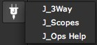
1.2 Versioning
J_Ops versioning has changed since the 2.0 release. Previously it followed the same manner as the Foundry’s products, namely: <Major>.<Minor>v<Vnumber>a/b<Alpha/Betanumber>. Now it follows the more restricted and Nukepedia friendly <Major>.<Minor>, with a v number in use in builds themselves.
You can see you current J_Ops version by adding one of the nodes and bringing up the help. It should list both the version and the build date and time.
1.3 Thanks/Contributions
- Everyone at the Foundry, for building the world’s best compositor, lighting tool, texture paint engine, conform station, high tech plug-ins, and being all round excellent colleagues.
- The guys responsible for all the third party libraries in use in J_Ops (see Appendix B). I’m standing on the shoulders of giants, without whom J_Ops would not have been possible.
- Rhys D at Filament VFX for the testing and documentation fisheye shots used for J_MergeHDR.
- Matt Brealey for material used in the J_Mullet documentation and videos.
- Thorsten Kaufmann for development and test depth and ID renders.
- Andrew Hake & Rob Elphick for the Op icons.
2 Plug-ins
2.1 J_3Way
2.1.1 Introduction
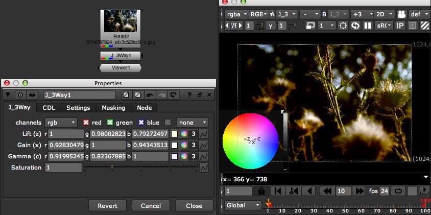
J_3Way is an NDK plug-in offering quick, artist friendly grading via an on screen control system, grade interchange via the ASC CDL format, and an extensible python framework for writing extra I/O modules.
2.1.2 Usage
The J_3Way control system was designed to give you direct control over the grade whilst remaining in the viewer. This association of control with the image canvas allows you to see the context of every decision without having to refer back and forth between control panel and viewer.
There are three main control system interaction methods:
- Via the virtual colour wheel interface, present in every area of the viewer except the actual colour wheel.
- Via the actual colour wheel interface in the viewer.
- Via conventional Nuke control panel interaction
The recommended way of setting up a grade is via 1. the virtual colour wheel interface, which can be thought of as a kind of ’poor man’s control surface’, if you will. To use this, click over any part of the screen other than the colour wheel. At this point you can enter one of three modes - lift, gain or gamma - by pressing z, x or c respectively.
When in a mode any cursor movement will be interpreted as a movement on a virtual colour wheel, with origin at the cursor position from which you entered the mode. Indeed, you can check out how the resultant move looks on the actual colour wheel interface present in the lower left of the viewer window. Releasing the current mode key again will toggle you out of that mode, and pressing a different mode key will toggle you out of the current mode and into the new mode associated with that key. Depressing multiple mode keys will keep you in the current mode, and add you into the new mode as well. At this point any movement will be translated as a move on both the mode’s colour wheels. This swift method of mode shifting allows you to rapidly bounce between the lift, gain and gamma parameters, tweaking each so as to balance other and obtain the desired grade.
When in any mode, a number of modifier keys can be held down so as to alter the impact of the current move, namely:
Shift - to gear up the change caused by the mouse movement, ie making a mouse move have a greater impact on the colour change
Ctrl/Cmd - to gear down the change caused by the mouse movement, ie making a mouse move have a lesser impact on the colour change
Ctrl/Cmd+Shift - to temporarily ignore all mouse moves. Useful when you’re getting close to the edge of the Viewer and want to continue adjusting the colour.
Alt - to interpret the mouse move as a luminance shift, rather than a hue/saturation colour wheel shift. Vertical moves are taken into account.
For you keyboard junkies, when in a particular mode you can also use the standard Nuke nudge keys (ie the numpad), coupled with the above modifiers, in place of the mouse to cause colour adjustments.
I’d thoroughly recommend a trackball when working with J_3Way and the virtual colour wheel interface, it just feels better!
Note, due to the overlay capturing all input mouse action when the J_3Way control panel is open, there is shift compared to general Nuke plug-in overlays in that the virtual colour wheel will only capture mouse input when the J_3Way control panel is currently selected. This means if you have multiple control panels open you can still interact with the other panel’s in viewer controls by deselecting J_3Way. To return selection, either click on the control panel, or click on the actual colour wheel drawn in the Viewer.
As you’ve probably noticed, you can also pick up the handles in the hue/saturation colour wheel and the luminance slider present in the Viewer when the J_3Way control panel is open. This allows direct interaction, and the ability to set a handle to a particular colour. The handles are identified by the mode hotkey printed next to them, and highlighted in the selected colour specified in the settings when selected via a mode hotkey.
J_3Way implements a gpu engine inside of the Nuke glslang framework, meaning if you can satisfy the caveats following you can set up Nuke so that J_3Way gives you lightning fast feedback.
- You need a meaty enough gfx card in your machine. If you see an error message in the terminal regarding your graphics card not supporting float or half float it means you probably don’t.
- J_3Way needs to be the last thing in the tree, ie, hook it up directly to the Viewer. Anything inbetween J_3Way and the viewer will break the gpu concatenation inside of Nuke, and the gpu engine will not be called.
- You need an early adopters mindset :) . This is a very new part of Nuke (read: quite shonky) and you’ll intermittently get things like the Viewer not updating when it should. If this happens kill the viewer and open a new one.
To use the gpu engine, hook up J_3Way to the viewer as described, open the viewer settings and switch bit depth to half-float, and toggle on ’use GPU for viewer...’ and ’use GPU for inputs...’.
If you’ve been communicated a look/grade via a cdl file you may wish to employ J_3Way in some form of viewer lookup configuration. Check out the Nuke manual regarding VIEWER_INPUT and ViewerProcess handling for more information on the standard Nuke methods to do this.
2.1.3 ASC CDL File I/O Framework
J_3Way implements an extensible python framework, allowing for import and export of ASC CDL files. Currently it supports CDL and CCC XML file import, and thanks to the framework you can extend this to any file type which you can parse via python. Obviously it’s taken a bit of effort to implement this in such a manner, rather than simply hiding it underneath the hood, so what I do ask is if you do add support for new file types and are able to share it, then drop the amended/new python files in an email on the Nuke-Users list. It’ll give you a warm fuzzy feeling of contributing back, and I’ll of course credit to you in the documentation. Also, feel free to clean up my frankly shocking python code and drop that back :)
To import a CCC or a CDL file, simply go to the CDL tab, select the filename in the file knob, then hit ’Import’. Note this’ll overwrite your current J_3Way settings, but if you decide the import was a bad idea, a judicious undo will get you back to pretty much where you started. Note that the ASC CDL does not define a source colour space explicitly, so you’ll need to check the description field for if the grade conveyed should be applied to the footage in question in Nuke’s linear space, or some other colourspace. Often toggling on raw/switching to linear on the source read will get you the result expected.
The python framework for J_3Way is all contained within the /J_Ops/py/J_Ops/J_3Way/ directory, situated wherever you chose to install the plug-ins. The following is a breakdown of what the existing files do:
J_3Way.pycontains the main entry functions from the plug-in. J_3Way will call either importCDL() or exportCDL() within here in response to an appropriate button push on it’s control panel.
parseCCC.pyimplements the simple colour correction import XML parser. It’s a good starting point to look at if you want to write your own I/O module.
parseCDL.pyimplements the somewhat more complex colour deicision list XML parser. This makes use of the CCC parser when it hits a ColourCorrectionRef entry, which if you’re looking to implement EDL/ALE/FLEX parsing is probably something you’ll hit
CDLUtils.pyprovides a general dialogue panel, as used by parseCCC and parseCDL, providing the user with the ability to select the appropriate ColorCorrection/ColorDecision entry. It also implements the parent class of both parseCCC and parseCDL, containing a number of shared functions.
__init.py__contains module import functions
The following is the basic order of events:
- J_3Way calls importCDL() or exportCDL() in J_3Way.py in response to a button push by the user. It grabs the extension and picks a parsing module based on that.
- J_3Way.py creates an instance of the parser (from parseXXX.py), calling the parse() main entry function, passing it the filename entered.
- parseXXX.py grabs the set of colour correction identifiers out of the file and stores them in a local dictionary called ’colourcorrectionvalues’
- parseXXX.py creates an instance of the parseDialogue in CDLUtils. The dialogue grabs the list of identifiers from the parser and displays as an enumerated list
- The parseDialogue calls the parseXXX.py’s parseElement method, passing the currently selected ColorCorrection identifier. The parser then goes back to the file and figures out the description and colour correction settings related to that identifier. It pops these in the colourcorrectionvalues dict also, and returns to the parseDialogue which grabs the values and displays them.
- The dialogue awaits input. On an identifier change it calls the parser again, as in step 5. On an ’ok’ or ’cancel’ click it returns to the parser, which, if necessary, sets the target knob values.
There’s a few more shennanigans involved to get the CCC by ref id, and corresponding knobs working, which can be checked out in more depth in the code itself. So, to create your own module you’ll need to:
- Create a new python module, named in line with the others and add to the relevant imports.
- Edit J_3Way.py to cause your module to be called by the appropriate file extension is found.
- Implement the parse, parseID and parseElement functions.
- Fiddle around with it til it works.
More information on the ASC CDL formats and specification is available from the very friendly people over at the ASC on asc-cdl at theasc.com
2.1.4 Knobs
J_3Way Tab Contains common knobs for driving the look of the grade applied.
-
channels - Channel selector, inherited from NukeWrapper. Allows you to pick which channel the grade is applied to. Note that the gpu engine does not support this, and will always apply its grade to the base RGB channel, so if you’re working on a non base layer you’ll need to switch off the gpu processing path in your viewer settings.Mapping - Drop down list which specifies how the lift, gamma and gain knobs are translated to the ASC CDL values used by the underlying transfer function. The ’Lift/Gamma/Gain’ option uses the DI standard mapping found on most grading systems, the ’ASC direct’ option maps directly (so lift=offset, gain=slope, and gamma=1/power), so offering more ’compositor’ style interaction.Clamp - Bool knob (checkbox) governs whether the underlying algorithm performs the clamps specified by the ASC CDL specification. Their transfer functions include clamps which limit pixel values to the 0.0 to 1.0 range after both the SOP (Slope, Offset, Power) and the Sat operations. This toggle allows you to switch off these clamps so as not the clamp the pixel data. Bear in mind, with this switched off the result is not CDL compliant!Lift/Gamma/Gain - Colour knobs to specify your grade. They are translated to ASC CDL values as listed on the CDL tab, which are then used to calculate the resultant image via the CDL specified transfer functions. There are three main ways of altering the values of these: -Using Nuke standard <childish snigger> knob manipulation </childish snigger> actions, such as typing directly into the value box, dragging sliders, alt+numerical drag and cursor keys. -Using the on screen colour wheel. When the J_3Way control panel is open all three values are depicted in the viewer colour wheel and luminance slider overlay. They are identified by the letters associated with them on the parameter panel (ie lift=z, gain=x, gamma=c), and can be picked up and dropped at will. -Using the on screen interaction tools, which is the recommended way of altering the parameters. Once the viewer has focus (ie click on it) you can then toggle into lift, gain or gamma mode by pressing the associated mode hotkey. For example, press z to toggle into lift mode, at which point any mouse move will be interpreted as a movement on a virtual colour wheel (ie Hue and Saturation change), updating the image, and the colourwheel overlay, as you go to show you the result of the current colour grade. Pressing z again will toggle you out of lift mode. Alternatively, you can press x to switch to gain, or shift+z to add gain to the current virtual colour wheel, so as to alter lift and gain simultaneously. Whilst in a particular mode you can use the following modifiers to alter the action of the mouse move: -Shift - gear up speed of move -Ctrl (win/linux)/Cmd (OSX) - gear down speed of move -Ctrl/Cmd + Shift - any mouse move should not be translated to a parameter change. Use to temporarily move the cursor around the screen without altering the params. -Alt - interpret vertical move as a luminance change Instead of using the mouse, you can also use the keyboard nudge keys (ie numpad) to alter the current mode in a particular direction, again using shift and ctrl/cmd keys to gear up and down.Saturation - Float slider. specifies the saturation change to your image. Directly linked to the ASC CDL saturation knob on the CDL tab, and only supported by ASC CDL rev 1.2 and above. Single value slider as the ASC CDL only specifies a single value saturation function. Valid when >= 0.
CDL Tab Contains knobs related to the ASC CDL I/O handling and the underlying algorithm.
-
CDL File File knob used to specify the source/destination file for the import/export operations.Import Python script knob which fires off the python import framework. Currently supports CCC and CDL XML formats. See the Python I/O framework section for more information on extending this.Export Python script knob which fires off the python export framework. Currently unimplemented. See the python I/O framework section for more information on extending this.Offset/Slope/Power - Colour knobs specifying the underlying CDL grade. Translated from lift/gain/gamma parameters as a result of any changes. Can be set manually, which’ll correspondingly set the lift/gain/gamma params.Saturation - Float knob specifying the saturation change to your image. Directly linked to the saturation knob on the front tab. Single value slider as the ASC CDL only specifies a single value saturation function. Valid when >= 0
Settings Tab This tab contains params which alter the operation of the J_3Way node. If you want to make any changes persistent, make use of Nuke’s Knob_Default functionality, which is documented in the Nuke manual.
-
Trackball/Mouse Group Contains knobs related to tweaking the operation of the mouse driven on screen virtual colour wheels.
-
Sensitivity - Float slider specifying the ratio between mouse moves and the corresponding move on the virtual colour wheel/slider . If you’re finding you don’t have enough precision, or indeed, too much precision, use this to alter it to your needs.Gear Up - Float slider specifying the additional ratio invoked by holding down shift whilst altering the grade via the virtual colour wheel.Gear Down - Float slider specifying the additional ratio invoked by holding down ctrl/cmd whilst altering the grade via the virtual colour wheel.
Keyboard Group Contains knobs related to tweaking the operation of the keyboard driven on screen virtual colour wheels.-
Nudge Group Contains knobs related to tweaking the sensitivity of the keyboard nudge keys.
-
Sensitivity - Float slider specifying the ratio between nudges and the corresponding move on the virtual colour wheel/slider . If you’re finding you don’t have enough precision, or indeed, too much precision, use this to alter it to your needs.Gear Up - Float slider specifying the additional ratio invoked by holding down shift whilst altering the grade via the virtual colour wheel.Gear Down - Float slider specifying the additional ratio invoked by holding down ctrl/cmd whilst altering the grade via the virtual colour wheel.
-
Interface Group Contains knobs related to tweaking the appearance and behaviour of the colour wheel/luminance slider overlay.-
Backdrop - Colour knob altering the colour of the background box.Selected - Colour knob specifying the colour to draw the point(s) currently selected via their mode hotkey.Unselected - Colour knob specifying the colour to draw the point(s) currently not selected via their mode hotkey,Size - Float knob specifying the size of the colour wheel interface in the Viewer.Colour Wheel Rotate - Float slider specifying how much to rotate the hue on the colour wheel overlay. This allows you to match the Hue/Saturation wheel to other packages. It defaults to 0.7 which matches the standard vectorscope graticle (such as that in J_Scopes), 0 makes it match Nuke. Valid 0.0 -> 1.0.Viewer Exit Toggle - Bool knob (checkbox) governing whether J_3Way toggles out of any current virtual colour wheel mode when the cursor leaves the Viewer. For example, if you are in z (lift) mode, then move the cursor out of the viewer, if the Viewer Exit Toggle is on, it’ll cause the lift mode to switch off. If it the Viewer Exit Toggle is off then you’ll stay in lift mode, and whenever the cursor re enters the viewer it’ll return to making changes to the lift knob.
-
Masking Tab Nuke standard masking knobs, inherited from NukeWrapper. See the Nuke manual for more details.
Node Tab Nuke standard node knobs. See the Nuke manual for more details.
2.2 J_GeoManager
2.2.1 Introduction

J_GeoManager is a 3D utility tool providing both information on the fed in 3D scene and enabling stripping of objects and/or attributes from the stream, from the point of view of troubleshooting badly rendering or heavy scenes. For example, in the circumstance where you’re reading in all objects in an fbx (to get the full transform tree), but don’t actually need most of them, J_GeoManager will allow you to strip out those you don’t want fed further downstream. Info provided includes point and vertex counts, presence of materials, transforms and attributes including, but not limited to, the various object’s normals and UVs.
2.2.2 Usage
Basic usage involves adding the node after the 3d nodes for which you wish to see the resultant info from and/or strip data. Ensure the viewer is hooked up downstream to pull data through the node, which’ll in turn populate the main table knob geolist.
The geolist knob is the heart of the GeoManager plug-in, displaying data on both the incoming scene and on the settings made to alter it, where each row equates to an object in the scene. In Nuke, an object will have a variety of semi static data associated with it (it’s point and vertex data, whether it has a material or a transformation matrix associated and so on), as well as an arbitrary array of ’attribute’ data. Attributes are associated with one of the object’s semi static data groups (ie the attributes can be attributable to the point data, the transformation matrix, etc), and have a name label. So, for example, the UV data on an object can be present on the points or the vertices, dependant on the level of complexity required. J_GeoManager shows the 5 standard Nuke attributes (N - normals, UV - uv texture, Cf - colour, PW - world position, and vel for velocity) and each one can be attributable to up to 5 of the groups (namely 25 different combinations). The geolist table contain columns for everything from object IDs, point and vertex data counts, through the range of attributes to the presence of materials and transformation data.
Using the checkbox toggles in the En column of the geoinfo table knob it is possible to selectively remove objects, however more detailed or selective changes require use of the ’per row’ knobs found under the table. These are selectively enabled and disabled depending on the current row selection in the geoinfo table. For example, to disable multiple objects simultaneously, select their respective rows in the table and then toggle off the Enable (En) knob in the per row knobs (see below info on how to select these by selecting their in viewer representations). Similarly, if you want to zero out a particular attribute (an attribute in Nuke town being a piece of arbitrary data associated with one of the either the object’s points, vertices, etc - for example an object’s UVs), you’d select the object’s row in the table, go down to the per row knobs and toggle off the respective checkbox in the attribute table. If you cock something up you can easily reset one or more rows by selecting them and using the Reset button.
For the majority of the scene data that can be affected (objects, attributes, materials, etc) the options are either to allow it through (ie Passthrough, or P) or to strip it (ie Zero, or 0). If an item is not present in the incoming stream it’ll be signified either with None present or a blank space. For transform data you can additionally elect to Bake, or B, the matrix. By default a transform associated with an object will be carried as an extra local-to-world transform matrix alongside the point data - by baking this data you’re able to set this extra matrix to identity and pre-emptively apply it’s previous transform data onto the mesh points themselves. This can be handy in those circumstances where the matrix data isn’t being accounted for, for whatever reason.
By default it can be tricky to relate rows of object data back against the object representations seen in the viewer. To make this much easier, flip the viewer geo selection tool into object mode, toggle on the object(s) in question you want highlighted in the geolist table knob and then hit the Geo Sel button on the param panel.
2.2.3 Knobs
Are all documented through Nuke’s extensive tooltip system. Fire up the tool and hover over the knob in question to get more information.
2.3 J_GotSomeID
2.3.1 Introduction

J_GotSomeID is a utility tool allowing fast and easy extraction of mattes and premulted channelsets from ID/Object passes from 3D, taking into account a range of encodings of ID and coverage/aliasing data.
2.3.2 Usage
To get started, hook up the node to your 3d import and in the ID channelset knob select the incoming ID/Object pass. Pick its encoding in the Type drop down, then optionally pick the coverage channel in the Coverage drop down. At this point you can start either picking a few objects manually, or use the Autofill button to create output passes for each and every object in the incoming stream and frame range. Note that if you have a lot of IDs and you only want to grab one or two the latter unlikely to be wise, since it’ll create a lot of unrequired channelsets and take some time.
To manually pick which objects you want channels for hook up a viewer ensure the picker is selected and mode is set to add, then cmd/ctrl click on the objects in the scene you want output passes for. The picker will grab the ID from the selected ID channelset automatically (regardless of what channel the viewer is set to) and create an entry in the idlist with the selected ID, an autogenerated channelset name, and checkbox defaults taken from the default knobs at the panel footer.
If you picked the wrong object select the entry, flip the mode to edit and cmd/ctrl click on the viewer again, thus altering its ID values in the idlist. You can also alter the idlist values, such as the channelset name, manually by double clicking and typing directly. To alter multiple output passes checkbox values, select the items on the list and toggle the checkboxes at the panel footer. To find a certain entry based on an object, flip the mode to find and cmd/ctrl click on the object in the viewer. If a matching output pass is found it’ll be sleected in the idlist. Finally, to add or delete entries use the + and - buttons at the bottom of the idlist.
Coverage passes allow aliasing data to be passed to the compositor. The most prevalent technique is to encode aliasing data into a separate output channel called the coverage pass. This can be used in J_GotSomeID by setting type to a Cov type, then checking the Cov checkbox on the required output pass. Where object aliasing crosses others this may look slightly wrong since aliasing data from one object is crossing another. Enabling Dil for an output pass attempts to fix this by dilating a fringe from the current object, flipping the aliasing data found and using this as additional falloff aliasing for the current object. Occasionally you may also see an ID pass where the ID are stashed around the Hue/Saturation wheel. More occasionally in these circumstances you may find that the aliasing data has been stashed in the ID pass V data, as opposed to separate pass. Both of these circumstances can be handled by selecting the appropriate entry from the type drop down.
Nuke’s channel system does not allow channelsets to be removed from the current session, thus if you add a lot of channels and remove them, or alternative rename channelsets a lot you’ll find the channel lists become populated with a lot of now defunct channelsets. Those not used in the current channel are removed when killing the current session and reloading the script. Additionally, channelset names should be alphanumeric.
2.3.3 Knobs
Are all documented through Nuke’s extensive tooltip system. Fire up the tool and hover over the knob in question to get more information.
2.4 J_ICCkyProfile
2.4.1 Introduction
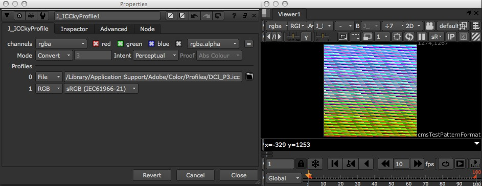
J_ICCkyProfile allows ICC based colourspace conversions to be applied within Nuke. This is not a magic wand ’here’s an ICC based colour managed workflow inside of Nuke,’ any more than Nuke’s own Colorspace node offers a linear colour managed workflow; the workflow step requires a whole bunch of wrapping that Iop’s can’t directly do inside of Nuke. Rather, think of it as offering low level control of ICC colour conversions. To use it effectively you’ll need to have an understanding of ICC in general, as well as of Nuke’s underlying rgb linear toolset. J_ICCkyProfile additionally offers a profile inspector, which can be used to judge what information is being conveyed in a particular ICC file.
J_ICCkyProfile is based upon the lcms2 library.
2.4.2 Usage
Colour conversions inside of J_ICCkyProfile can be one of 4 modes - apply, convert, chain and proof. Convert is the most standard, and allows you to specify two colour spaces, which the plug-in then converts the image data between. Apply only offers a single patch - it assumes the other colourspace is RGB linear (gamma 1.0) and attempts to guess whether the profile you specify should be used as the input or the output colourspace, based on its metadata tags. Chain allows multiple conversions to be chained together, which can be occasionally useful for devicelink type profiles. The final, proof, allows an input output profile pair, as in convert, in addition to a proofing profile to be employed, so as to judge how the output of a particular process (which the profiling profile represents) will look.
Individual profile patches can either be specified by an ICC file on disk (ICC direct, not embedded inside an image file’s metadata), or from a number of RGB profile presets provided directly. For further colourspace options, such as CIEXYZ, feed through to RGB linear then employ Nuke’s own Colorspace node for the final step.
An ICC conversion also requires an intent to be defined (or in the case of a proofing transform, 2 intents). This alters what image aspects are deemed most important, and so what the conversion attempts to preserve.
The inspector tab allows you to inspect ICC files directly, showing information on what ICC tags are contained therein. This is very useful for troubleshooting in particular, but requires relatively specific ICC knowledge. If you intend on using this tool extensively, and haven’t already done so, then the ICC spec, as well as the lcms documentation are well worth a read.
Bear in mind that images are colour managed by Nuke by default, so to get close to Adobe’s colour management you may need to switch Nuke’s to raw and use this op to manually apply such colour corrections. Also bear in mind that this uses a different colorimetric engine (namely lcms) to Adobe’s, since theirs is proprietary, so results will never 100% match.
For ease of use it may be worth modelling the desired icc profile by feeding a cmsTestPattern through this op and writing out a Nuke readable 3D LUT.
2.4.3 Knobs
Are all documented through Nuke’s extensive tooltip system. Fire up the tool and hover over the knob in question to get more information.
2.5 J_MergeHDR
2.5.1 Introduction
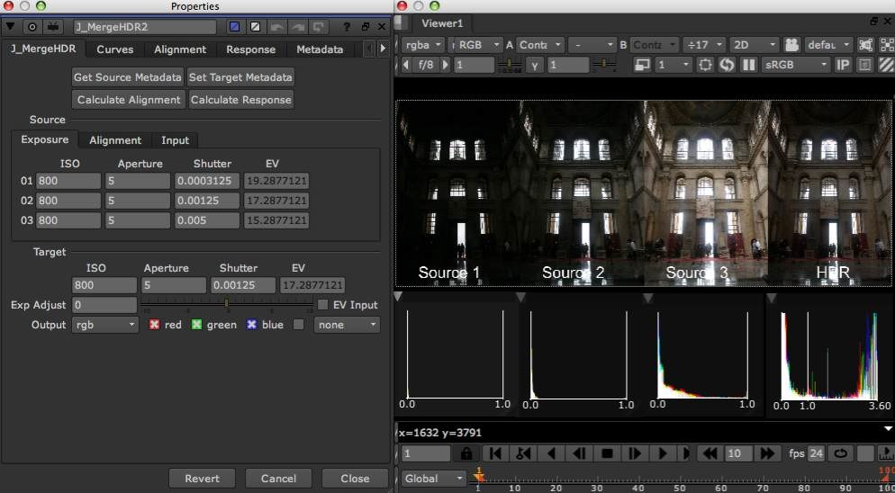
J_MergeHDR is a compiled NDK plug-in offering a fast and efficient route for combining multiple low dynamic range images into a high dynamic range radiance map, for example, merging mirror ball shots for use in lighting setup.
It implements:
- Debevec et al’s “Recovering High Dynamic Range Radiance Maps from Photographs,” for the response estimation functionality.
- Greg Ward’s “Fast, Robust Image Registration for Compositing High Dynamic Range Photographs from Handheld Exposures,” for the alignment estimation functionality.
2.5.2 Usage
Typically, a general J_MergeHDR workflow consists of three main steps:
- Setting up source and target exposures.
- Aligning the source images.
- Estimating a camera response.
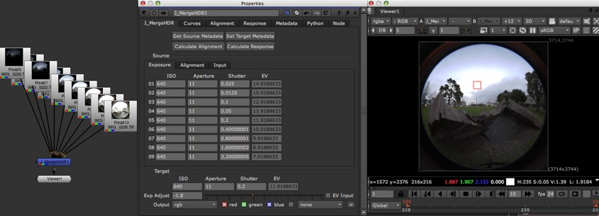
Once you’ve hooked up the node to the various LDR images, you need to tell J_MergeHDR what the rough exposure data for the source streams is. For any modern camera this should be present in the metadata read in, so the first order of the day is to hit the ’Get Source Metadata’ button. This’ll query the source stream’s metadata looking for the keys set in the ’Metadata’ tab’s search strings. In most circumstances the defaults should be fine and you’ll now see that the source exposure parameters have been filled in. If the search has been unsuccessful the op with error and will tell you on which inputs it was unable to find the metadata key strings specified. This could be down to either
a) the metadata string being wrong, in which case use a ViewMetadata node to see what the string should be, amend it and hit ’Get Source Metadata’ again.
b) there being no metadata of the exposure data present in the source. In this circumstance you’ll have to enter the data manually into the source ’Exposure’ panel params. Note that shutter speed is expected in seconds (and you’re probably used to seeing it in 1/ notation). In this case simply go into the appropriate shutter speed knob and type in ’1/<your value>’ and hit enter for Nuke to evaluate for you. If you simply dont have the data at all you can dial in values manually by eye. In this case it’s generally easiest to switch on ’EV Input’ which allows you to dial in the EV knob directly (conventionally it’s contributed to by ISO, shutter and aperture separately, but since you don’t know that data, you might as well cut it right out of the loop).
The first thing you’ll probably notice, having filled in the source metadata, is that the output’s got very white. That’s because the target exposure default is set to unity, and in most normal circumstances your exposure values are going to be way in excess of that. To sort that out either manually tweak down, or hit the ’Set Target Metadata’ button. This’ll set the target exposure values to be the median of the input range, which is normally a pretty good starting point. You can now manually dial up or down the desired target using the ’Exp Adjust’ slider.
Occasionally this is all that is required to get an acceptable, and usable, result.
Often you’ll get source images which aren’t perfectly registered. If you’re one of the lucky ones who’s images are already aligned then skip this stage, otherwise read on. The Alignment panel on the J_MergeHDR tab allows you to dial in offsets, in pixels, for each image in turn. Hitting ’Calculate Alignment’ will fire off a process which’ll attempt to figure out these offsets automatically. If the results aren’t perfect they’re normally better, and form a good basis to subsequently tweak.
If the results are way out of whack there are a couple of params you can try tweaking on the ’Alignment’ tab. First up, ’Exclusion’ allows you to set the range of data around the image median value which is ignored when comparing sources too each other. A higher ignore range will have the effect of rejecting more noise, so if you have particularly noisy or grainy images you can try tweaking this up. Note that going too far means it less likely to find a registration, so your better bet is probably to run a noise reduction pass on the images first (note that the response estimation is also affected adversely by noise, so a reduction pass first is probably a good idea there as well). Max offset allows you to define the search range. Great ranges take longer, and are likely to be less robust. If you’re looking >50 pixel mark then buy a tripod, or manually set the alignment offsets.
The alignment functionality only deals with translation offsets. If there are rotational differences between the frames then you’ll often find that fixing their translational offsets will have the effect of pushing the rotational disparity to the edge of the frame, where it’s not particularly noticeable. If it’s still getting to you, hook up a transform node on the afflicted input and fix it manually. Greg Ward’s papaer, mentioned before, is a good read if you’re looking to get more in depth with the alignment estimation functionality, in particular looking at the diagnostic views and what they mean.
You’ll often find that if something goes wrong, it’ll be only on one or two inputs, and finding out which ones is tricky. On the ’Input’ panel on the ’J_MergeHDR’ tab you’ll find a series of ’enable’ checkboxes. These’ll allow you to selectively switch on and off which inputs are rendering (and having the alignment estimation run on them) and so find the offending culprits.
The final step, if necessary, is to estimate the response curve of the camera with which a scene was shot. Camera manufacturers (and models, and lenses, and chips, and ad infinitum) have their own ideas of what makes a perfect way to reproduce the range of data in the image down to a low dynamic range, where direct mapping of intensity data to resultant value is generally of rather low importance. If you’re lucky the work done thus far is enough to give a result which is sufficient for your needs, otherwise we’re going to have to look at figuring out a reverse of whatever mapping was applied. Now, by it’s very nature this is only ever an approximation. Often, parts of the ’special sauce’ camera manufacturers apply can be spatially localised dependent on surrounding luminance conditions, and a lookup mapping such as we’re trying to use to invert it can only get so far.
The curves tab contains 4 curves. 3 for the different colour channels of the logarithmic camera response, and 1 for the weighting curve applied both when estimating the response, and when recombining the exposures. Hitting ’Calculate Response’ will fire off the algorithm described in Debevec’s ’Radiance Maps’ paper as mentioned earlier, which’ll attempt to estimate these curves for us. The result will be used to render immediately, so you’ll get an idea of if it’s what you need. Bear in mind you’ll likely need to tonemap the data down, or apply something like J_Scopes, to get an idea of the resultant intensity distribution.
There are two main means by which we can impact the results. The algorithm initially picks a series of samples from the source images (which is why it’s important they align), and then passes these sampled pixels values into the actual solve phase. To impact the feature selection, use the knobs in the ’Response’ tab’s ’Feature’s’ group. Check out where the features lie and if many sit on clipped, or noisy, image data try altering the seed or changing the total number to avoid these regions. To alter the solve use the ’Response’ tab’s ’Solve’ knobs. If you have an excessively spikey response try increasing lambda (and vica versa). If your response is too high on it’s upper limit, try increasing the unity point up (in the range 0 to 1), and vica versa.
2.5.3 Knobs
J_MergeHDR Tab This tab contains the most commonly used knobs when setting up a HDR merge. Often, for a basic merge, you can get away without switching away from this tab.
-
Get Source Metadata - a button which’ll kick off a scan through the input streams current toggled on in the channels setting and attempt to read back the source exposure metadata. It’ll report errors where the set metadata strings cannot be found in the source stream; either alter the metadata strings to match what is present or enter the data manually.Set Target Metadata - a button to set the target metadata based on the median of the input data set in ’Get Source Metadata.’Calculate Alignment - a button which’ll execute an alignment estimation pass. This’ll attempt to calculate the closest position offsets for each input, needed to align it to the median exposure image in the series. This only does a translation offset, but even in the case of rotational differences, this’ll have the impact of pushing the rotation offsets to the edges of the frame. Note that results will vary, so some manual fix up may be required. Don’t run on an already registered sequence!Calculate Response - a button which’ll execute a response calculation pass. This’ll attempt to figure out the response curve of the camera with which the shots were originally taken. This may be taken care of to a suitable amount via the built in Nuke linearisation, however if it’s not looking good you may be able to improve matters by setting up a response curve in J_MergeHDR. If you do so, it is often good to read in the shots in question as raw, and use J_MergeHDR to model the overall camera response and linearise.Source Divider - a grouping of knobs which largely control the data about the incoming image streams.
-
Exposure Panel - a grouping of knobs related to the exposure data for the incoming image streams.
-
ISO - a series of float knobs, one per input, which define the ISO value for the image on the same numbered input. This contributes to the input’s overall EV exposure value, visible in the associated EV knob, and which can alternatively be entered directly by toggling on EV Input.Aperture - a series of float knobs, one per input, which define the aperture value, in f-stops, for the image on the same numbered input. This contributes to the input’s overall EV exposure value, visible in the associated EV knob, and which can alternatively be entered directly by toggling on EV Input.Shutter - a series of float knobs, one per input, which define the shutter speed, in seconds, for the image on the same numbered input. Note that shutter speeds are conventionally given in 1/ speeds, as opposed to the decimals seen here. To easily enter in such a value, simply type it directly into the knob (ie ’1/250’), and equally, invert the result to get back to your start point. When set from metadata, this knob is set via an expression to the fraction, presuming that it is fractional in the source metadata (as opposed to it being evaluated at set time to a decimal). This allows you to see the original fractional value by either hovering over to see the tooltip, or by bringing up the expression entry dialog for the knob in question. This contributes to the input’s overall EV exposure value, visible in the associated EV knob, and which can alternatively be entered directly by toggling on EV Input.EV - a series of float knobs, one per input, which define the overall exposure for the image of the same numbered input, in EV. This can either be used as a point of reference for judging exposure based on ISO, aperture and shutter measures, or can be used to enter such values directly, bypassing the aforementioned three parameters, by toggling on the EV Input checkbox.
Alignment Panel - a grouping of knobs related to the translation offsets applied to the incoming image streams.-
Input Offset - a series of XY position knobs, one per input, which defines a translation offset for the input image of the same number, in pixels. Use to align images which have been shot without a tripod. Purely translational, however setting this will also have the impact of pushing rotational misalignments to the edge of the frame. If this isn’t sufficient, manually hook up transforms to the inputs, or buy yourself a tripod. Also see the Calculate Alignment button for setting these values automagickally.
Input Panel - a grouping of knobs related to the incoming image stream pixel data.-
Enable - a series of checkboxes, one per input, which allow you to easily enable and disable that input, and thus in turn to easily judge the impact a particular input is having on a final result. This is also used when calculating alignments and response functions, so if you have a particular image which is throwing off calculations, but which you want in your final HDR then toggle it off here whilst working, then turn it back on at the end and do final integration work.Input Channelset - a series of channelset knobs, one per input, which define what channelset the incoming image data is living in.
-
Target Divider - a grouping of knobs which cover setting the related output data for the generated HDR image.-
ISO - a float knob which defines the desired output image’s ISO, in the sense of how it contributes to the overall target EV. Set automatically when running Set Target Metadata.Aperture - a float knob which defines the desired output image’s aperture value, in the sense of how it contributes to the overall target EV. Given in f-stops and set automatically when running Set Target Metadata.Shutter - a float knob which defines the desired output image’s shutter speed, in the sense of how it contributes to the overall target EV. Given in seconds and set automatically when running Set Target Metadata.EV - a float knob which defines the desired output image’s overall exposure value. The result of the target ISO, shutter & aperture combined, as point of reference. Toggling on EV Input allows this to be manually entered, skipping setting the consitutent parts individually, however if you’re simply looking to manually tweak the target exposure up and down, you’re generally best off using Exp Adjust. Set as a result of the target ISO, aperture and shutter being set when running Set Target Metadata.Exp Adjust - a float knob with slider which allows you to tweak the target exposure up and down manually, in EVs.EV Input - a checkbox to enable or disable inputting EV values for source and target exposures manually, as opposed to enforcing input of sets of ISO, aperture and shutter values.Output - a channelset knob which defines the channelset to which the output high dynamic range merge is sent.
-
Curves Tab This tab contains a curves graph interface, for viewing and manipulating the response estimate calculated, and associated buttons.
-
Calculate Response - a button which’ll execute a response calculation pass. This’ll attempt to figure out the response curve of the camera with which the shots were originally taken. This may be taken care of to a suitable amount via the built in Nuke linearisation, however if it’s not looking good you may be able to improve matters by setting up a response curve in J_MergeHDR. If you do so, it is often good to read in the shots in question as raw, and use J_MergeHDR to model the overall camera response and linearise.Reset Response - a button which’ll reset the response curve, in the situation that it’s actually worse post analysis than before, or when you’ve buggered up the response curves beyond belief by fiddling with them manually.Reset Weight - a button which’ll reset the weigh curve used in the response estimation function, and in the high dynamic range merging. Default follows that used by Paul Debevec in ’Recovering Radiance Maps’, however subsequent papers have advocated use of gaussian curves to soften roll off.Curves - a lookup knob which interfaces to the response and weighting curves for the camera function and the high dynamic range merge. Weight is used to roll off the data used in both response estimation, and in exposure merging. Red/Green/Blue are the logarithmic response curves of the camera, used to precorrect the exposures when merging.
Alignment Tab This tab contains params related to the alignment estimation and pre-merge translation.
-
Calculate Alignment - a button which’ll execute an alignment estimation pass. This’ll attempt to calculate the closest position offsets for each input, needed to align it to the median exposure image in the series. This only does a translation offset, but even in the case of rotational differences, this’ll have the impact of pushing the rotation offsets to the edges of the frame. Note that results will vary, so some manual fix up may be required. Don’t run on an already registered sequence!Reset Alignment - a button which’ll reset all the inputs alignment offset values to zero.Variables Divider - a grouping of knobs related to values passed into the alignment process, both for estimation and for translation.
-
Exclusion - a float knob with slider which defines the range around the input’s median value which is ignored when calculating a best fit alignment. Higher values have the effect of rejecting greater amounts of noise, so if you have a noise sequence which isn’t aligning, try increasing this. Failing that run a noise reduction algorithm first (probably required as the noise’ll also throw off the response calculation), or dial alignment offsets in manually.Max Offset - an int knob defining the maximum distance in pixels which you expect your images to need to be moved to align them. Increasing will increase the time required for calculating the alignment significantly. Note that this is used to define the max offset at the top of the underlying image pyramid, so the final offset could be up to twice this.Black Outside - a checkbox to insert black outsides after the incoming offsets have been done. This causes the edge repeat pixels otherwise seen in offset images to be removed, and instead the combination happens against black. Either way it’s likely you’ll have to crop the resultant image to remove these regions.
Diagnostics Divider - a grouping of knobs allowing you to see and tweak a series of diagnostic view renders on the underlying alignment process. Read Greg Ward’s ’Fast Robust Image Registration’ paper for more detail on what the underlying views show.-
Show - a drop down and checkbox, where the checkbox toggles the diagnostic view rendering on and off, and the drop down allows you to pick the desired view. The diagnostic views allow you to tweak your alignment params by studying the impact of the params at the various levels of the alignment calculation chain. MTB - Median Threshold Bitmap - red shows the selected input partitioned around its median value, green shows the exclusion bitmap, namely the selected input within the exclusion range, blue shows the greyscale input. XOR - red - shows the XORed MTBs of the two source images against each other, and ignoring the exclusion range, green - shows the exclusion bitmap, blue - shows the greyscale input.MTB Input - an int knob enabled when MTB diagnostic view is selected. This defines which input to show through the MTB process. Out of range or non-hooked up inputs will cause an error.XOR Input 1 & 2 - a pair of int knobs enabled when XOR diagnostic view is selected. These define the pair of inputs to run through the MTB to XOR process. Out of range or non-hooked up inputs will cause an error.
-
Response Tab This tab contains params related to the response estimation and merge look ups. Generally you need to work with this tab in conjunction with the curves tab to see the results of the changes you make.
-
Calculate Response - a button which’ll execute a response calculation pass. This’ll attempt to figure out the response curve of the camera with which the shots were originally taken. This may be taken care of to a suitable amount via the built in Nuke linearisation, however if it’s not looking good you may be able to improve matters by setting up a response curve in J_MergeHDR. If you do so, it is often good to read in the shots in question as raw, and use J_MergeHDR to model the overall camera response and linearise.Reset Response - a button which’ll reset the response curve, in the situation that it’s actually worse post analysis than before, or when you’ve buggered up the response curves beyond belief by fiddling with them manually.Reset Weight - a button which’ll reset the weigh curve used in the response estimation function, and in the high dynamic range merging. Default follows that used by Paul Debevec in ’Recovering Radiance Maps’, however subsequent papers have advocated use of gaussian curves to soften roll off.Features Divider - a grouping of knobs allowing you to see and tweak the feature points used in the response estimation.
-
Preview Features - a checkbox to enable and disable the feature preview overlay which draws crosses wherever a point has been picked for use in the response estimation calculation. Use this to judge if any points have been placed badly (such as in clipped or noisy source regions) and alter the seed to ensure this doesn’t occur.Cross Size - an int knob defining the size of the feature preview overlay crosses.Seed - an int knob defining the randomisation seed value used to place the feature samples. Alter this to change where the samples are located.Number - an int knob defining the total number of samples used in the response calculation. More is slower, but results in an estimate closer to the original.Max Search - an int knob defining the number of times an algorithm can ignore a selected position if it thinks the underlying data could be poor. Set this to higher if the algorithm is picking up flat, or clipped regions. The greater the number the longer the sample setup time may take.
Solve Divider - a grouping of knobs allowing you to tweak the values passed into the response calculation function, along with the selected feature point data.-
Lambda - an float knob defining a the smoothing function run over the response estimate. The higher the number the smoother the result, but the less likely to match the original function. Increase if you’re seeing rough spiking, decrease if the result is overly flat.Unity Point - an int knob defining the solve fix point. When solving, we need to arbitrarily fix a certain value on the response function to be 1. The default is modelled on Debevec’s selection in his Radiance estimation function. Increase this if the resultant response curve upper limits are too great, decrease if they’re too low.
Threshold Divider - a grouping of knobs allowing you to define intensity ranges of data to ignore when both estimating the response function and when merging. Occasionally you see images with significant amounts of clipping, which the existing weighting curve and feature selection prediliction functions don’t account for. For example, Debevec’s Memorial Church sequence imports to Nuke with some blue channel clipping which throws off the resultant calculations. Using the thresholds vastly cleans up the results.-
Min - a float knob with slider defining the minimum intensity value on a per channel basis. Out of range pixels are ignored.Max - a float knob with slider defining the maximum intensity value on a per channel basis. Out of range pixels are ignored.
-
Metadata Tab This tab contains params related to the metadata searching functions.
-
Get Source Metadata - a button which’ll kick off a scan through the input streams current toggled on in the channels setting and attempt to read back the source exposure metadata. It’ll report errors where the set metadata strings cannot be found in the source stream; either alter the metadata strings to match what is present or enter the data manually.Reset Source Metadata - a button which’ll reset the source exposure params to their default values.Get Target Metadata - a button to set the target metadata based on the median of the input data set in ’Get Source Metadata.’Reset Target Metadata - a button which’ll reset the target exposure params to their default values.Search Divider - a grouping of knobs defining the strings searched for in the source metadata.
-
ISO - a string knob defining what metadata key value is searched for to set the ISO params for the incoming streams.Ap - a string knob defining what metadata key value is searched for to set the aperture params for the incoming streams.Exp - a string knob defining what metadata key value is searched for to set the exposure params for the incoming streams.
-
Python Tab Nuke standard python callback knobs, found on any executable node. See the Nuke manual for more details.
Node Tab Nuke standard node knobs. See the Nuke manual for more details.
2.6 J_Mullet
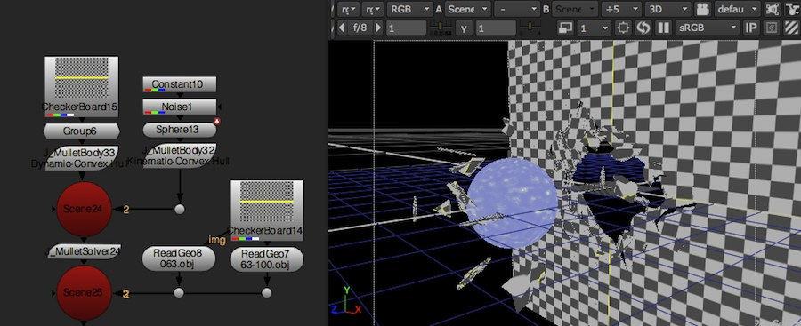
J_Mullet is a suite of 5 plug-ins offering rigid body physics simulation inside of Nuke, based upon the Bullet engine. The J_MulletSolver is the core of the toolkit, performing the actual calculations, whilst the remainder allow you to define the properties of your scene by inserting metadata into a Nuke 3D stream. At minimum you need to add a J_MulletBody node to a geometry stream, followed up by a J_MulletSolver node. The Mullet toolkit is mainly aimed at quick and easy physics simulations in the context of compositing, as opposed to hero shot physics simulations. It is limited to working on a constant number of objects per scene, as well as working on objects with properties within an order of magnitude of each other.
- J_MulletSolver. The core engine tool of the Mullet toolkit, this performs the heavy lifting when it comes to calculating the scene interactions - every simulation needs one. It additionally allows for calculations to be baked down to matrix knobs, so that they need not be performed again and again.
- J_MulletBody. Defines the presence of a piece of geometry within the physics scene, and allows you to specify a range of properties, including the shape with which it should be represented (its collision shape), the body’s weight, center of mass and more.
- J_MulletCompound. Allows physics bodies to be built from multiple pieces of geometry.
- J_MulletConstraint. Allows physics bodies to be connected to each other via a variety of joints. Additionally, joints can be configured to break as a result of collisions and other force interactions. This should be used to build more complicated networks of geometry connections that break when hit by another object, or by a force within the scene.
- J_MulletForce. Allows forces to be added to the physics scene, and configured to act on all, or a subset of the objects within the physics scene.
Standard usage generally consists of bringing in your scene geometry (prefractured where you want to explode or otherwise break items), setting up a scene using the solver calculating on the fly, then baking down the resultant simulation once you’re happy with it, or when it starts to get too slow to work with. All the Mullet nodes are extensively tooltipped, so the following per node sections are more of an introduction - see the knob tooltips for more extensive discussions of the options available.
2.7 J_MulletBody
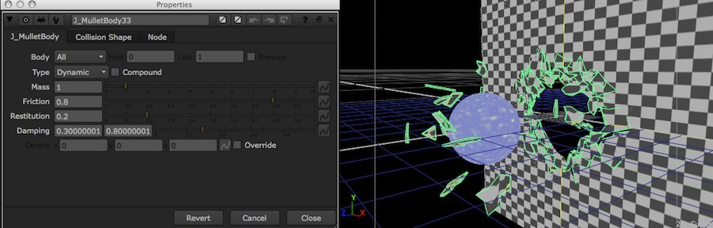
J_MulletBody is part of the Mullet toolset which offers rigid body dynamics simulation within Nuke’s 3D scene. J_MulletBody inserts metadata into the stream conveying an object’s desired characteristics. To have any affect it needs to be followed with a J_MulletSolver node which will actually does the heavy lifting of simulating the scene together. Each incoming object selected can either be individually set to be a physics world body, or they can be grouped together to become a single compound body which interacts together as a group.
A body in the physics world is represented by a set of characteristics roughly approximated to real world physical properties (such as mass and friction) along with a collision shape. Generally the collision shape is a simplified version of the actual object, allowing faster simulation of interactions.
The first tab allows you to select a range of incoming objects and define whether each or all represent a single body and whether than body is a dynamic, kinematic, or static. For ease of script reading the current body type is automatically shown on the node’s label. A dynamic body is subject to all applied forces, constraints and interactions, whilst kinematics and statics are simply part of the scene with which dynamic objects can collide. Kinematic bodies will update their position to match the source, whilst statics are stuck at their initial position at the simulation start frame.
Additional characteristics include the body’s mass, centre of mass, friction, damping and bounciness.
The second tab governs the body’s collision shape. An object can be modelled as a sphere, cube or convex hull, where complexity of shape is traded off against speed of simulation. Again, for ease of script reading the selected type is shown on the node’s label by default. J_MulletBody defaults to convex hull, for ease of setup, however if you can mimix your object by one of the simpler options you should. Convex hulls can also (and are by default) be automatically decimated for speed. Spheres and cubes use the bounding box to define their sizing, however this can be overridden.
A collision shape additionally defines a Margin, defining when it starts to collide with surrounding objects. Often to get a good looking interaction between objects you need to override and tweak this for both objects involved with the collision.
If you are seeing odd interactions between objects it is possible that your collision shape is not closely enough mimicking your object. Try switching on J_MulletSolver’s troubleshooting overlay, looking at the wireframes in particular to see how closely they match the actual object.
2.8 J_MulletCompound
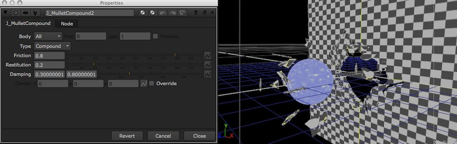
J_MulletCompound is part of the Mullet toolset which offers rigid body dynamics simulation within Nuke’s 3D scene. J_MulletCompound inserts metadata into the stream conveying how objects should be grouped together. To have any affect it needs to be followed with a J_MulletSolver node which will actually does the heavy lifting of simulating the scene together.
Incoming objects need to have already been defined as bodies inside the physics scene, using J_MulletBody, and indeed, in many cases J_MulletBody is capable of performing the compound grouping as well.
J_MulletCompound is of use when you want to group together multiple groups with different collision shapes in a single compound (though note that they must all be of a dynamic body type).
2.9 J_MulletConstraint
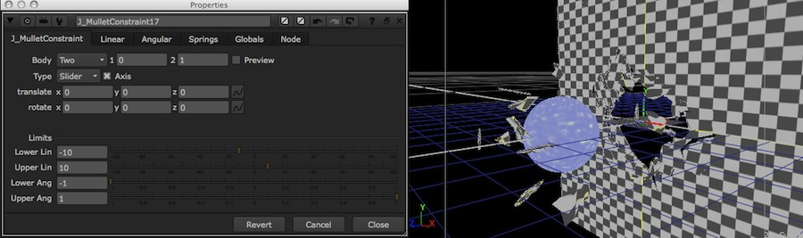
J_MulletConstraint is part of the Mullet toolset which offers rigid body dynamics simulation within Nuke’s 3D scene. J_MulletConstraint inserts metadata into the stream conveying data about linkages between objects, allowing them to be coupled together, or to absolute positions within the scene. To have any affect it needs to be followed with a J_MulletSolver node which will actually does the heavy lifting of simulating the body interactions, as well as with relevant bodies on which to act.
A single J_MulletConstraint node can be configured to fix a single object to an absolute position in the scene (One), a pair of objects to each other (Two), all objects to their positions in the world (All-Lone), or set up a network of linkages between each object and it’s nearest x neighbours (All-Pair).
Depending on the Body pairing a constraint may require an absolute position to be defined to act as the point to which the body is fixed (using translate, rotate and/or the on screen widget), it may dynamically calculate the position from the midpoints of the objects involved, or it may offer you the choice of either via Axis.
A constraint can be one of a number of types, which offer increasing levels of control over the degrees in which the attached objects can move around each other, and have motors or springs applied. See the Type tooltip for a full breakdown. For script legibility the currently selected type is shown in the node’s label.
Motors allow a constraint to act as an engine, driving movement into a scene. They can be configured to act along or around axes of motion (depending on the constraint Type). Springs, as you would expect, allow the axes of movement some degree of flexibility, and are only available on the 6DOF constraint Type
Often it is desirable to allow a network of constraints to hold a set of objects together until a certain collision occurs, or level of force is applied. Breakable constraints allow exactly this, and the breaking point can be defined with both a Break threshold and an additional level of random Variance to introduce realistic looking delays in splitting into larger constraint networks.
J_MulletConstraint is set up to operate on scene objects rather than physics world bodies. As such the body selection dialog’s 1 and 2 work in object IDs. If you have already combined multiple objects into a single compound body then any constraint set up between individual objects in that body will be ignored.
2.10 J_MulletForce
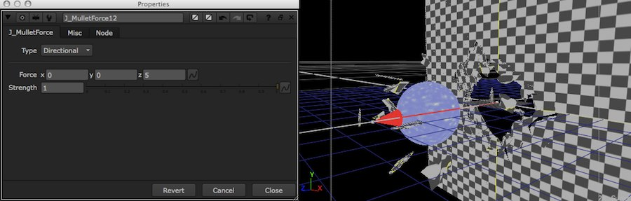
J_MulletForce is part of the Mullet toolset which offers rigid body dynamics simulation within Nuke’s 3D scene. J_MulletForce inserts metadata into the stream conveying data about forces within the scene. To have any affect it needs to be followed with a J_MulletSolver node which will actually does the heavy lifting of simulating the body interactions.
J_MulletForce allows you to define a force from a number of different types, including directional, point, turbulence, rotational and positional, with a varying array of controls for each. All force types include an animatable Strength parameter which allows for easy varying forces. A number of force types also expose an in viewer widget allowing the force to be quickly and easily altered by directly operating on your scene. For script readability the currently selected force type is shown on the node’s label.
Plugging a J_MulletForce into a physics scene by default means it’ll affect every object within the scene. You can opt to Filter, meaning that the force is only applied to the objects present on the primary input which are fed through to the scene.
By defining a scene on the Vol, or volume, input you are able to limit the force to only be applied inside a certain spacial volume.
The Pnt, or point, input is optionally used by a number of the force types to define a position in 3d space (for example to source the force from). It expects an Axis or an Axis derived node (such as Camera) for its input.
2.11 J_MulletSolver
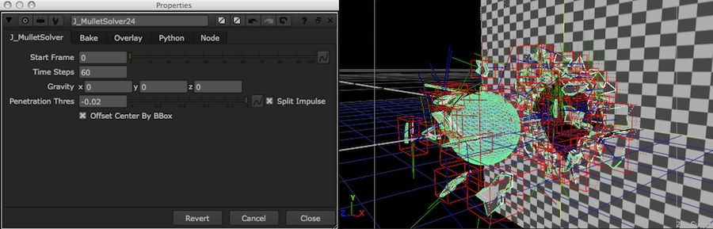
J_MulletSolver is the engine tool of the Mullet toolkit, allowing rigid body dynamics simulation within Nuke’s 3D engine. The remaining tools in the suite simply insert metadata into the stream which is utilised by the solver to govern how the object interaction takes place. No J_MulletSolver in your scene means no simulation will take place, as does no metadata inserting tool, such as J_MulletBody, since the solver will not know that a dynamic body exists.
A scene can contain dynamic, kinematic and static rigid bodies, which can be connected together (or to absolute positions in the scene) via systems of constraints, and acted on by forces. Bodies can be arranged into compounds, which enable them to behave as a single entity.
The Mullet toolkit is mainly aimed at quick and easy physics simulations in the context of compositing, as opposed to hero shot physics simulations. It is also limited to working on a constant number of objects per scene. Introducing or removing objects during the simulation range will result in undefined behaviour; don’t do it. If you need to allow an object to interact only after a certain range of time there are a number of options, including suspending it out of shot on a kinematic body which is moved out the way, on a breakable constraint which is broken using a suitably sized force, or applying an invisible texture up to a certain frame.
The Mullet toolkit uses the Bullet physics simulation library underneath the hood, which establishes a number of limitations on the type of scene that it can model. The simulation engine is designed to simulate interactions between bodies of size and mass within an order of magnitude of each other. As such it will not provide a realistic representation, for example, of a tiny, light, fast moving body (for example a bullet) hitting a slow, heavy, large object (such as a tank)
Overall scene characteristics are controlled via the front panel. Baking, or position caching, is available through the second tab, and a Debug overlay, showing the scene as constructed by the engine so as to allow easy troubleshooting is available on the third.
By default the engine is run dynamically, at render time, by the solver node. For large scenes, or where the resultant scene and render is being extensively worked with, this can prove to be a large overhead. In most normal circumstances once you’ll want to start baking down the results either during or soon after completing your dynamics simulation.
Nuke uses hashes to track the ’fingerprint’ of the current node graph, and so to figure out when knobs/reads/etc change and a rerender is required. For 2D there’s a single hash, but for 3D there are a range, depending on which part of the 3D structure (point positions, object positions, UVs, etc) need to change. Unfortunately some of these 3D hashes, depending on the ops in use, are not the most stable and may change from one script load to the next. J_MulletSolver identifies whether the current Bake cache is valid using combinations of these hashes as an ID. If the solver simply used the relevant hashes you’d unfortunately find that, thanks to the lack of robust hash consistency, it would randomly start reporting the Bake cache as invalid from one script load to the next. Instead, the Bake ID Strategy group offers control over how various parts of the incoming scene and settings are combined.
2.12 J_rawReader
2.12.1 Introduction

J_rawReader is a rewrite of the NDK example crwReader which supports the reading of a variety of SLR raw camera formats. Whilst the crwReader utilises the third party DCRaw command line application thus requiring additional tools to be installed, J_rawReader uses the rather awesome LibRaw to do the heavy lifting, making it faster and more robust than the crwReader. Additionally, J_rawReader implements a flexible RAM and disk caching system to speed up your workflow, along with a progress feedback system to keep you up to date with what its doing. Additionally it injects metadata from the raw file into the stream, allows extensive control over the underlying raw negative development process, and adds redirects (ie support) for Nikon and Panasonic raw formats plus Adobe DNG, in addition to the already present Canon support.
2.12.2 Usage
First off, note that a link to create a ’J_rawReader’ doesn’t appear in the J_Ops toolbar; as with any other filereader in Nuke it is created by adding a read node and attempting to read a file of the type supported by the reader. Currently files of the types ’crw’ ’cr2’ ’dng’ ’nrw’ ’nef’ and ’rw2’ will cause a J_rawReader to be used. If there is another file type which you know can be read by DCRaw, and which you want to use, then drop a request onto the nuke users list asking me to add a redirect.
Debayering is a slow process, however J_rawReader’s RAM and disk caching system should ensure that it only happens when required. When you see a progress bar appear it’s likely that it’s having to go through this process. Note that the disk caching mechanism is fairly disk hungry, so the larger you’re able to set your cache preferences, the better it’ll perform.
The disk cache may occasionally get confused (particularly when the cache is shared between platforms). You may see errors pop up about not being able to read or write the cache. In this circumstance, use the Render->Clear Disk Cache function, followed by a reload on the Read node itself.
J_rawReader will attempt to read metadata from the input file and insert it into the metadata in the stream. It’ll use the exif namespace for data which maps to an exif counterpart (currently limited to the exposure data used by J_MergeHDR), and a raw namespace for all remaining data it is able to extract. Append a viewmetadata to see the resultant data.
J_rawReader exposes a range of knobs to allow you to tune to underlying raw negative development process to your needs, even to the extent of setting up proxy decode parameters separately to full res. LibRaw is based on DCRaw, so if you’re familiar with the DCRaw flags you’ll find they largely have direct mappings to the LibRaw controls exposed. The development controls are divided into three main groups - quality, colour (inc white balance, histogram based corrections and manual corrections) and artefact correction. The knobs are described in more depth in the following section. For more information on DCRaw, the tool upon which LibRaw is based, and the flags available see the DCRaw homepage available at http://www.cybercom.net/~dcoffin/dcraw/.
2.12.3 Knobs
Read Tab Contains the standard read knobs, followed by
-
raw options separatorFull Res/Proxy tabs duplicated tab groups, allowing the underlying raw development parameters to be set differently. You’ll need to use the ’Enable Proxy Settings’ checkbox to enable the Proxy tab controls.
-
Quality group grouping of knobs related to the quality of the underlying raw development process.
-
Bit Depth enumeration knob allowing to pick 8 or 16 bit processing. Note both are fixed integer types; float buffers in the underlying development process are not currently supported by the underlying LibRaw engine. Equivalent to DCRaw’s -6 flag.Interpolation enumeration knobs specifying the debayering interpolation method, in rough order of decreasing speed and increasing quality. Equivalent to DCRaw’s -q flag.DCB:Iterations int knob enabled when interpolation is set to DCB, specifying the number of DCB correction passes to be run. Default of -1 equates to no impact. Note additional correction passes can take a long time. No DCRaw equivalent.DCB:Enhance checkbox enabled when interpolation is set to DCB, specifying whether to run DCB colour enhancement interpolation. No DCRaw equivalent.Median Passes int knob specifying the number of iterations of a 3x3 median filter to run on the R-G and B-G channels to help clean up colour artefacts. Equivalent to DCRaw’s -m flag.Half Size checkbox allowing the underlying development to be run at half size, to increase speed. Only recommended for use in the proxy tab. Equivalent to DCRaw’s -h flag.
Colour group grouping of knobs related to the colour processing run during the underlying raw development process.-
White Balance divider grouping of knobs related to the white balance processing carried out during the underlying raw development process.
-
White Balance Mode enumeration knob specifying where to source the white balance correction carried out on the negative. Default uses DCRaw’s fixed white balance based on a colour chart illuminated at D65. From Camera attempts to read the white balance setting from the metadata, falling back to default if none is present. Auto from full frame builds an average from the image data an uses that. Auto from region builds an average from a region you specify and uses that. Eqiuvalent to DCRaw’s -w -a and -A flags.White Balance Region area box with on screen widgets, enabled when White Balance Mode is in Auto from region mode. Equivalent to DCRaw’s -A flag.User White Balance specifies a manual white balance offset (additional to any other auto white balance offset). Note the 4th channel is not the alpha, but rather the second green channel used in the debayer process. Equivalent to DCRaw’s -r flag.
Histogram divider grouping of knobs controlling the auto colour correction applied based on the image histogram.-
Auto Brightness Threshold float knob and checkbox. Enabling the checkbox turns on an automatic brightness correction applied in the underlying development process. The float knob specifies the threshold used in the calculation, essentially governing the proportion of pixels clipped. Checkbox is equivalent to DCRaw’s -W flag. No direct equivalent for the float knob.Highlight Clip Mode enumeration knob specifying the highlight processing. Clip, as the name suggestions, clips them out to solid white. Unclipped leaves the highlights unclipped in various shades of pink. Blend blends the clipped and unclipped versions together for a gradual fade to white. Reconstruct rebuilds the highlights according to the reconstruction int knob value set. Equivalent to DCRaw’s -H flag.Reconstruct int knob enabled when Highlight Clip Mode is set to ’Reconstruct. Controls how the reconstruction algorithm operations. Lower numbers favour whites, higher numbers favour colours. Recommended start point is 2 as a compromise. If you need to push higher, it’s generally good practice to matt a high reconstruction value read node’s highlights over one with a reconstruct of 0. Equivalent to DCRaw’s -H flag.
Manual divider grouping of knobs allow manual colour correction to be applied during the raw development process.-
Gamma Power float knob allowing the gamma curve’s power value to be set. Default is 1 which gives a linear decode, inline with the default lookup specified by the reader. Use 1/2.222 to correspond to a BT709 power curve, and 1/2.4 to correspond to the power value of the sRGB curve. Equivalent to DCRaw’s -g flag.Gamma Toe float knob allowing the toe slope of the gamma curve’s toe slope to be set. Default is 1 which gives a linear decode, inline with the default lookup specified by the reader. Use 4.5 to correspond to a BT709 toe slope, and 12.92 to correspond to an sRGB toe slope. Equivalent to DCRaw’s -g flag.User Brightness int knob setting the brightness value by which the white point is divided. Equivalent to DCRaw’s -b flag.User Black int knob setting a user defined black level. Increase this is the shadows appear foggy. The default of -1 means none specified. Equivalent to DCRaw’s -k flag.User Saturation int knob setting a user defined saturation level. Increase this value when the highlights start to appear pink. The default of -1 means none specified. Equivalent to DCRaw’s -S flag.
-
Correction group grouping of knobs related to artefaction compression techniques which can be applied as part of the raw development process.-
Aberration Correction R-G & B-G two float knobs allowing the red and green layers respectively to be scaled to correct for chromatic aberrations. Generally ranges from 0.999 to 1.001. Equivalent to DCRaw’s -C flag.Noise Reduction: Threshold float knob specifying the amount of noise reduction to apply. Equivalent to DCRaw’s -n flag.Noise Reduction: Pre-Debayer enumeration knob specifying how heavy an FBDD denoise pass to run on the data prior to debayering. No DCRaw equivalent.
-
Help button. Workaround for Nuke not supporting the standard Help function on Reader op types. Pops up information specific to the rawReader, ncluding the version number of the included build of LibRaw (useful when troubleshooting, and when checking whether a camera is supported).Disk Cache checkbox. Allows you to specify if the disk caching mechanism is used. RAM caching is always used, but it will not maintain data when changing frames, so a debayer will happen. Only use this if you’re having problems with the disk caching mechanism, or if the amount of disk used offends your sensibilities.Enable Proxy Settings checkbox. Enable to allow the proxy settings to be used. With this off the full res settings are use when run in proxy mode. -
2.13 J_Scopes
2.13.1 Introduction
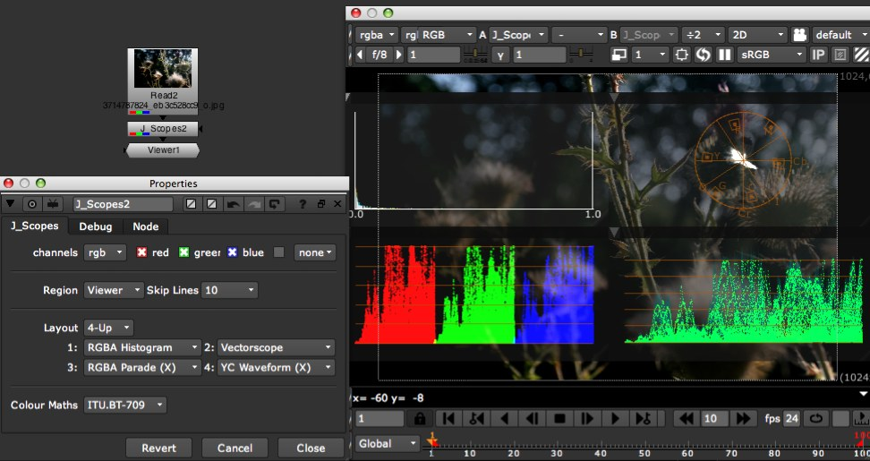
J_Scopes analyses your image data and draws a variety of histograms, parades and waveforms as overlays to the viewer.
2.13.2 Usage
The first thing to know about using this plugin is that the scopes will only be drawn when the node control panel is open. This is simply part of the Nuke architecture, and something you’ll have to work with. Individual controls have tooltips, so check them out if you’re still lacking information after reading this.
Add a Read node pointing at the image you want to see a Histogram of, append a J_Scopes node to it, and make sure the node control panel is open. This should show the default display of an RGBAHistogram over the entire image. You can alter the displayed scope type using the ’1’ drop down. To add more scopes to the display, alter the ’layout’ drop down. The default ’1 Up’ only displays the one scope, ’2 Up’ will display 2 and so on up to 4. Of course, as you add more layout slots for scopes, you can change the type of scope in them using the 1, 2, 3 and 4 dropdowns which will become enabled or disabled based on the number of slots selected.
The following is a breakdown of the scope types available inside J_Scopes. Images illustrate the scopes in order of description.
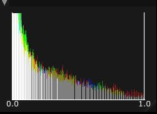
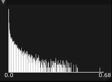
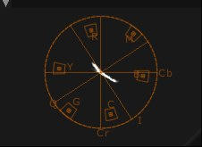
RGBA_Histogram: Maps the range of colour values in the input image against the frequency of their occurance. Alpha, if enabled in the channel selector, weights the pixel value with which it is associated. You can alter the Y Scaling using the ’Histogram Y Scale Type’ drop down in the Debug tab.
Luma_Histogram: As RGBA, but maps ITU.BT-701 Y against frequency of occurance. Requires all 3 colour channels to be present in source.
Vectorscope: Maps ITU-BT-701 Cb against Cr, so providing a plot of hue against chrominance intensity. I’ve adjusted the target graticle to match Nuke colour bars at 0.75 intensity. Requires all 3 colour channels to be present in source.
Each of the following is available in an X and Y variety - X maps against the horiztonal axis, Y against the vertical (note when using Y scopes you’ll probably want to set the skip lines to 1, otherwise you’re immediately chopping out lines of data). Each has a graticle of 5 lines, running from 0 (lowest, or most left) to 1 (highest, or most right), at 0.2 intensity increments. Note intensity is measured in the 0 to 1 range for visible data, rather than IRE scales. Out of range data is also plotted:
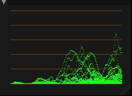
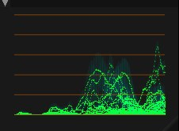
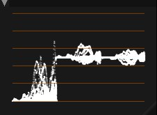

Y_Waveform: Plots luminance (calculated using the selected maths) against the X or Y axis.
YC_Waveform: Plots luminance and chrominance against the X or Y axis. Y is calculated using the selected maths. C is a hypot of the selected CbCr maths, riding on the Y data.
YCbCr_Parade: Plots the Y Cb and Cr signals alongside each other against the selected axis. Since Cb and Cr signals roam from +0.5 to -0.5 (when calculated from RGB data in the 0-1 range), both chrominance channels have their 0 point at 0.5 on the intensity axis.
RGB_Parade: Plots the R, G and B signals alongside each other against the selected axis.
For the scopes displayed, you can move them round on the screen by clicking and dragging on the title bar, resize them by clicking and dragging on the triangle in the lower right of the scope display, and minimise/maximise them using the arrow on the top right of the title bar.
You can use the plugin as a VIEWER_INPUT. This allows you to get it inserted just before the viewer, regardless of what the viewer is hooked up to, or which input is active. Check the Nuke manual for how to do this. Set ’input process order’ to ’after viewer process’ to see the result of the LUTTing/gamma/gain viewer operations in reflected in the scope data.
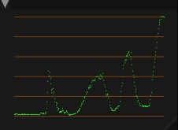
You can use the source region drop down to specify the area sampled by the plug-in. Viewer, the default, means show me the data from the lines being pulled through the viewer, and so doesn’t add too much of a compute burden. ROI means show me the data from within a certain region (defaults to entire image, so can be computationally more expensive), and slice allows you to graph just the data on a line between two points (a la the slicetool of a popular compositing bible).
Additionally, for the first two modes, you can specify a certain ratio of lines to skip, so as to speed up the calculation at the expensive of accuracy.
2.13.3 Knobs
Hover over the knob in question in the J_Scopes param panel for live tooltip help!
2.14 J_ZMaths
2.14.1 Introduction
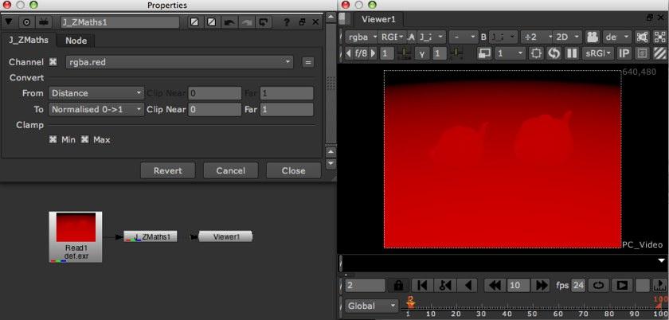
J_ZMaths is a utility tool allowing quick and easy conversion between a variety of depth channel encodings, as output by the range of 3D packages and renderers.
2.14.2 Usage
Pick the channel containing your depth data if it differents from the default Nuke z chan, then pick the source and target depth encodings from the following options.
Distance: (ZBlur equivalent: Depth). z - linear representation.\nPixel value is absolute depth in front of the camera.
Inverted Distance: (ZBlur equivalent: Far=0) .1/z - inverse representation. Pixel value is the inverse of the depth. Used by Nuke’s 3D system & PRMan.
Normalised 0->1: (ZBlur equivalent: Far=1). z ranges 0 to 1 (near to far). Pixel value is mapped to the 0 to 1 range. Used by OpenGL.
Normalised 1->0: (No ZBlur equivalent). z ranges 1 to 0 (near to far). Pixel value is mapped to the 1 to 0 range. Used by VRay.
Neg Distance: (ZBlur equivalent: -Depth). -z - negative linear representation. Pixel value is the negative of the absolute depth infront of the camera.
Neg Inv Distance: (ZBlur equivalent: Far=-0). -1/z - negative inverse representation. Pixel value is the negative of the invert of the depth. Used by Maya.
Normalised -1->0: (ZBlur equivalent: Far=-1). z ranges -1 to 0 (near to far). Pixel value is mapped to the -1 to 0 range.
Normalised 0->-1: (No ZBlur equivalent). z ranges 0 to -1 (near to far). Pixel value is mapped to the 0 to -1 range.
Some depth encodings normalise the underlying depth data, thus losing the absolute depth values. In the circumstance that you pick such an encoding the tool will enable additional Clip Near and Clip Far knobs, allowing the resultant conversion to be scaled to take into account the normalisation. Depending on how you limited the range in your 3D package, either enter the clips from the source camera, or use the range limits imposed in your render pass configuration. If you don’t care about the absolute values (or wish to scale the data manually using other Nuke tools) then opt for the defaults. If you select an normalised encoding for the target then the two clamp checkboxes will enable, allowing you to force clamp the resultant depth map to the notional range imposed.
2.14.3 Knobs
Channel a drop down channel selector, designating which channel contains the depth data, and thus which channel to operate on.
Convert separator
-
From a drop down enumeration list, designating the source depth data’s encoding type. The depth types selectable are covered in the usage section above.Clip Near a float knob enabled when the From encoding is set to a normalised type. This, coupled with the Clip Far knob, defines how to scale the depth data to recover the absolute depth values.Clip Far a float knob enabled when the From encoding is set to a normalised type. This, coupled with the Clip Near knob, defines how to scale the depth data to recover the absolute depth values.To a drop down enumeration list, designating the desired/target depth data’s encoding type. The depth types selectable are covered in the usage section above.Clip Near a float knob enabled when the To encoding is set to a normalised type. This, coupled with the Clip Far knob, defines how to scale the depth data into the normalised encoding space. Generally use the min and max of the linear depth.Clip Far a float knob enabled when the To encoding is set to a normalised type. This, coupled with the Clip Near knob, defines how to scale the depth data into the normalised encoding space. Generally use the min and max of the linear depth.
Clamp separator
-
Min a checkbox enabled when the To encoding is set to a normalised type. This enables the resultant depth map to be clamped to the min of the notional range specified by the selected normalised encoding.Max a checkbox enabled when the To encoding is set to a normalised type. This enables the resultant depth map to be clamped to the max of the notional range specified by the selected normalised encoding.
2.15 J_ZKeyer
2.15.1 Introduction

J_ZKeyer is a utility tool allowing easy extraction of mattes and depth of field representations from a z-depth pass, via a number of different interfaces, but primarily a quick and intuitive eyedropper based system. The node is additionally able to setup other depth related nodes (such as ZBlur) with matching configuration, once a region has been selected.
2.15.2 Usage
Hook up a J_ZKeyer node to an image stream with a z-depth pass, switching the node’s Depth knob to the appropriate channel if the pass doesn’t reside in the usual depth.z. Now use the mode drop down to elect whether you wish to pick the region from the central focal plane and one of it’s extremes (Focal Plane/Region), pick the front and back specifically (DOF Near/Far), or pick the focal plane and use a real world camera approximation to define the depth region (Focal Plane/Real World).
If you picked either Focal Plane/Region or DOF Near/Far you’ll now get a pick mode drop down from which you can specify which of the two you’ll be colour picking, and then use standard viewer sampling hotkeys to grab samples from the desired area. For example, if you’re looking to setup a ZBlur to throw out of focus the background, but leave the foreground, you’d pick the Focal Plane by sampling the foreground object, and the Region by sampling from some object just behind the foreground. Note that the sample will always be taken from the elected depth channel, regardless of what channel the viewer is configured to use, so you’re easily able to sample from the actual scene beauty pass itself.
Once you’ve sampled as required you’ll notice that the Output section knobs are now filled in with the data, and you can now either use the provided buttons to create an appropriate setup ZBlur node (or Peregrine Lab’s Bokeh if you have this installed). Additionally you’re able to flip over to the Matte tab and use the controls there to generate a matte based on the region elected. Note that sane people don’t anti alias their depth passes, so of course the same aliasing will be present in mattes generated from it. By default the matte will be binary - 0 for pixels not in the region, and 1 for those that are. You can elect to use the profile curves option so as to provide a roll off to the edges, and there’s a number of such curves available as predefined buttons below the curve knob itself.
The Real World section knobs, enabled when the mode is set to Focal Plane/Real World, allows a region depth to be approximated using idealised real world camera parameters - namely the focal length and aperture. Additionally the circle of confusion for this idealised imaging system can be altered, but it’s generally best left on default unless you know what you’re doing. This requires the depth pass to be encoded as Distance; use J_ZMaths if required to convert if necessary.
2.15.3 Knobs
Are all documented through Nuke’s extensive tooltip system. Fire up the tool and hover over the knob in question to get more information.
3 Python Scripts
J_Ops bundles a number of utility python scripts, in addition to the nodes detailed above. These provide useful base level functionality, are generally implemented in the bundled menu.py script and can be enabled, disabled and otherwise controlled in the J_Ops preferences tab. This can be found in your usual Nuke preferences, and non-default settings are stored in the associated preferences<ver number>.nk script found in your .nuke directory.
3.1 Improved Drag & Drop
The improved drag and drop script builds on Nuke’s bundled drop functionality to add creation of ReadGeo, Camera, Light and Vectorfield nodes when geometry or LUT files are dropped on them as appropriate. In the circumstance that a folder is dropped on the DAG then a per sequence node is created, and optionally (controlled in the J_Ops preferences) the script will recurse into sub directories creating nodes for each sequence found therein. This functionality can be enabled and disabled in the J_Ops preferences.
3.2 DAG Bookmarks
DAG bookmarks have been removed as of 2.1, due to inclusion of similar functionality natively inside of Nuke 7.0.
4 Release Notes
4.1 Known Issues/Requests
4.1.1 J_3Way
- Make the mouse wheel do luminance up and down shifts. Can’t be done currently due to bug 9634 in Nuke (namely mousewheel events never making it into Qt Nuke builds). Pester Jon and the team to fix this, if you want to work in this manner.
4.1.2 J_Scopes
- Results aren’t cached.
- Previous frame results dropped when calculating current frame, making scope appear blank whilst calculating.
- No way of locking scope to a particular data range.
4.1.3 Scripts
- Improved drag and drop: does not observe Nuke’s preference setting for hash or regex type filename use. This is due to the underling Nuke function being used not observing this setting.
4.2 Historical
4.2.1 2.1v1 :
Feature release of J_Ops for Nuke7.0. Platforms: Windows XP64, Centos5.4 64bit, MacOSX 10.6 64bit.
- J_ICCkyProfile added. J_ICCkyProfile allows ICC based colourspace conversions to be applied within Nuke. This is not a magic wand ’here’s an ICC based colour managed workflow inside of Nuke,’ any more than Nuke’s own Colorspace node offers a linear colour managed workflow; the workflow step requires a whole bunch of wrapping that Iop’s can’t directly do inside of Nuke. Rather, think of it as offering low level control of ICC colour conversions. To use it effectively you’ll need to have an understanding of ICC in general, as well as of Nuke’s underlying rgb linear toolset. J_ICCkyProfile additionally offers a profile inspector, which can be used to judge what information is being conveyed in a particular ICC file. J_ICCkyProfile is based upon the lcms2 library.
-
J_Mullet:
- Added new collision shape type - the tri mesh. The tri mesh supports both convex and concave underlying shapes, at the expense of longer processing times. Static tri meshes use a different, faster, body type than dynamic or kinematic bodies, best suited to modelling complex environments and the like. The collision shape is available in the J_MulletBody collision shape type drop down.
- Added initial velocity controls to the J_MulletBody and J_MulletCompound ops for both linear and angular control. These can be used to give the body an initial movement speed within the scene. The J_MulletCompound initial velocities will override any upstream J_MulletBody settings for those bodies, as per other compound settings.
- Added ’optimise’ control to the J_MulletBody and J_MulletCompound ops, allowing control over whether Bullet can optimise the scene for faster simulation by allowing static bodies to deactivate. Previously this was always on for dynamic bodies. Occasionally, particularly with the new dynamic tri mesh shapes, a body can deactivate before it should, so stopping moving. If you see this sort of behaviour experiment with toggling this control off.
- Added progress bars to simulation phase, which has in turn been moved out to Nuke 7.0’s updated prevalidate phase. This allows reliable use of progress bars within geometry ops and similar. The progress bars report both current stage (as %age) and current simulation fps, as well as offering the ability to cancel the calculation.
-
J_rawReader:
- added thumbnail decompression for jpeg and bitmap based raw thumbnails when in the file browser. The resultant image dimensions will be reported incorrectly, but the preview is significantly faster.
- added ability to read embedded ICC profile and apply to the image data.
- fixed bug which intermittently made decoded images report incorrect size. Resultant image data would only be for part of the frame.
- removed ARRIRAW tcl redirect script since Nuke 7.0 features native ARRIRAW reading, which is significantly better than the DCRaw based implementation. If you need it back for whatever crazy reason, copy and rename one of the other tcl redirects to J_rawReader (for example the cr2Reader.tcl script).
- All plug-ins and their library dependencies have been rebuilt with VS2010 on windows (and gcc4.1 on linux for those libraries which hadn’t been for 2.0), in line with Nuke 7.0.
- Moved documentation to using compressed jpgs to reduce build and install size.
- Removed bookmarking script, due to Nuke 7.0’s inclusion of similar functionality.
- Made drag and drop improved script handle extensions in varying case.
- Bundled a ’manual install’ directory in windows build, at user request.
4.2.2 2.0v1 :
Feature release of J_Ops for Nuke6.3. Platforms: Windows XP64, Centos5.4 64bit, MacOSX 10.6 64bit.
-
J_Mullet added. J_Mullet is a suite of 5 plug-ins offering rigid body physics simulation inside of Nuke, based upon the Bullet engine. The J_MulletSolver is the core of the toolkit, performing the actual calculations, whilst the remainder allow you to define the properties of your scene by inserting metadata into a Nuke 3D stream. At minimum you need to add a J_MulletBody node to a geometry stream, followed up by a J_MulletSolver node. The Mullet toolkit is mainly aimed at quick and easy physics simulations in the context of compositing, as opposed to hero shot physics simulations. It is limited to working on a constant number of objects per scene, as well as working on objects with properties within an order of magnitude of each other.
- J_MulletSolver added. The core engine tool of the Mullet toolkit, this performs the heavy lifting when it comes to calculating the scene interactions - every simulation needs one. It additionally allows for calculations to be baked down to matrix knobs, so that they need not be performed again and again.
- J_MulletBody added. Defines the presence of a piece of geometry within the physics scene, and allows you to specify a range of properties, including the shape with which it should be represented (its collision shape), the body’s weight, center of mass and more.
- J_MulletCompound added. Allows physics bodies to be built from multiple pieces of geometry.
- J_MulletConstraint added. Allows physics bodies to be connected to each other via a variety of joints. Additionally, joints can be configured to break as a result of collisions and other force interactions.
- J_MulletForce added. Allows forces to be added to the physics scene, and configured to act on all, or a subset of the objects within the physics scene.
- Added improved drag and drop python script, meaning that when geometry and LUT files are dropped on the DAG the ReadGeo, Light, Camera and/or Vectorfield node appropriate to their use is created (rather than the Read node created previously). Additionally the script can be configured to recurse into sub directories when folders are dropped. This functionality can be enabled and disabled in the J_Ops preferences tab.
- Added DAG bookmarking python script, allowing node graph positions to be saved and recalled via the menu entries, the TAB selector or their associated hotkeys. This functionality can be enabled and disabled in the J_Ops preferences tab.
- Added J_Ops preferences tab to main Nuke preferences, to allow control of J_Ops python script configuration.
- J_rawReader: updated libraw for optimisations and bug fixes as well as to add support for newer cameras, including the Canon 5D mk3. Additionally added experimental support for ARRIRAW. This’ll updoubtedly be done better by the Foundry at some point, but it may get you out of a pickle in the meantime. Note that the colour handling for arri is all rather strange.
- J_rawReader: exposed control over output colourspace from the process (equivalent to output_color in libRaw and the DCRaw -o flag). This chains with NUKE’s read colourspace, so the two need to be set in tandem.
- J_rawReader: changed defaults for full res to use linear interpolation on the debayer, based on user feedback that linear is more than sufficient most of the time, making the extra compute time spent in AHD interpolation unnecessary.
- J_rawReader: fixed crash when executing in terminal mode with disk caching switched on.
- J_rawReader: fixed circumstance where bit depth may not be read correctly out of disk cache.
- J_rawReader: fixed file handle leak that could cause session to become unstable when using long sequences or large numbers of raw files.
- J_MergeHDR: allow animation of alignment knobs, so that hdr sequences can be merged with their alignment offsets animated.
- J_MergeHDR: added a number of weight curve presets as buttons. Some users have been seeing banding in the extreme highlights and lowlights of merges. Different weighting curves often mitigate or eliminate these.
- J_MergeHDR: changed weight curve default, again to mitigate banding some users have seen.
- J_MergeHDR: fixed preview overlay intermittently not working due to Nuke 6.2 changes.
- J_MergeHDR: fixed metadata get and reset buttons not working in terminal mode (these can now be called by their python execute methods, to allow scripting of HDR merge setups).
- J_3Way: the Nuke guys recently added button release events (thanks guys!), which means that the colour corrector mode can now be set on a button depress, and unset on button release. This is how I always wanted the corrector to work, so have changed the defaults to do so. The old modal operation is still available by toggling the Release knob in the Interface group of the Settings tab.
- Added manual install folder to linux install bundle at user request.
- Shifted versioning to more nukepedia friendly shortened form.
4.2.3 1.0v1a9 :
Feature release of J_Ops for Nuke6.3v1. Platforms: Windows XP64, Centos4.5 64bit, MacOSX 10.5 64bit.
- J_ZMaths added. J_ZMaths is a precompiled NDK utility plug-in, allowing easy conversion between a variety of depth pass encodings.
- J_ZKeyer added. J_ZKeyer is a precompiled NDK utility plug-in, allowing fast generation of depth regions and mattes from z-depth passes via an intuitive eyedropper based interface.
- J_GotSomeID added. J_GotSomeID is a precompiled NDK utility plug-in designed to speed up working with object ID and coverage passes.
- J_GeoManager added. J_GeoManager is a precompiled NDK 3d plug-in providing access to information about 3D scene’s not otherwise available and allowing filtering out/removal of objects from the stream.
- Icons added, many thanks to Andrew Hake.
- J_rawReader has been updated with latest LibRaw, providing faster decoding and support for new cameras including the Canon 60D and 1100D. Additional functionality provided by new library has been exposed including further noise reduction tools and exposure compensation.
- Windows XP32 and MacOSX 10.5 32bit support dropped, inline with supported Nuke 6.3 platforms.
4.2.4 1.0v1a8 :
Feature release of J_Ops for Nuke6.2v1. Platforms: Windows XP32, Windows XP64, Centos4.5 64bit, MacOSX 10.5 32bit, MacOSX 10.5 64bit. Date 12/10.
- Centos4.5 32bit platform dropped, inline with Nuke’s supported platforms.
-
J_rawReader: rewritten to use the rather awesome LibRaw, under CDDL license. New version has:
- No external dependancy on DCRaw, so nothing extra to install or configure.
- Significantly improved performance, thanks to LibRaw and new internal RAM and disk caching mechanism.
- Additional decode features present in LibRaw not available in DCRaw (at time of inclusion for example, DCB debayer interpolation and FBDD pre-debayer denoising)
- Progress feedback.
- Improved interface, presenting underlying options as series of knobs, as opposed to the flag knob on the previous build.
- Inserts metadata into the stream in a more compliant manner. Direct matches to exif data go into the exif namespace, and the remainder into a new raw namespace.
- Note that the defaults now use the camera metadata for white balance, as opposed to the DCRaw default illumination. Coupled with the change in knobs note that this makes this build incompatible with scripts saved from the previous build.
- J_rawReader: fixed bug when using a forced reader type (ie putting ’raw:’ at the start of the filename). This technique should now successfully work to force use of the rawReader when attempting to read in a file format for which no redirect has been included. Of course, if you find yourself often doing this, let me know on the nuke users list and I’ll add support natively.
- J_MergeHDR: altered to set shutter speed from metadata as an expression, as opposed to evaluating the fraction. This allows you to hover over the relevant knob to show tooltip, or pop up the expression box, to see the fractional representation of the value (ie 1/20 as opposed to 0.05).
- J_3Way: set up knob_changed to handle animated GLG knobs.
- Appended icon search path to init.py, to ensure icon found when running from a custom path.
- Added some J_MergeHDR bracketed set screengrabs to the docs, kindly provided by Rhys of Filament VFX.
4.2.5 1.0v1a7 :
Feature release of J_Ops for Nuke6.1v1. Platforms: Windows XP32, Windows XP64, Centos4.5 32bit, Centos4.5 64bit, MacOSX 10.5 32bit, MacOSX 10.5 64bit. Date 09/10.
- J_MergeHDR added. J_MergeHDR is a precompiled NDK plug-in intended to simply the task of putting a together a high dynamic range radiance map from a series of low dynamic range exposures. It performs a number of functions, namely, querying the source LDR metadata streams for exposure data, calculating a series of translation offsets to align the source LDR images, and estimating a response curve for the camera used to shoot the images. It also has functionality such that should automatic estimations prove off, they can be tweaked, or entirely created, manually.
- J_rawReader retained. Nuke6.1 adds some of the features of J_rawReader, but there are a number left which mean it still has value. Also added Panasonic RAW format redirects.
- Changed installers to install into the new common location searched by Nuke6.1. You may need to remove older versions from your .nuke directory to enable the new builds to be picked up. Rejigged python support scripts appropriately.
- J_Scopes: fixed issue with Vectorscope when viewer run in float or half float modes. It was leaving the gl buffer in a bad state, which could cause the VIEWER PROCESS to fail when being run on graphics hardware.
- Added 64-bit OSX builds.
4.2.6 1.0v1a6 :
Feature release of J_Ops for Nuke6.0v1. Platforms: Windows XP32, Windows XP64, Centos4.5 32bit, Centos4.5 64bit, MacOSX 10.5 32bit. Date: 02/10.
- J_rawReader added. J_rawReader is a precompiled NDK plug-in based on the NDK crwReader example which uses DCRaw to read in a variety of SLR raw formats. J_rawReader adds, over the top of crwReader, controls to allow the user to tweak the flags passed to DCRaw (with control over the flags between full res and proxy mode), and it inserts metadata extracted from the raw file (again via DCRaw) into the stream. crwReader redirects from canon raw formats only (crw & cr2). J_rawReader additionally redirects from Nikon (sorry, I said a bad word) raw formats and Adobe DNG.
- Split menu.py into init.py for plugin path setup and menu.py for toolbars. As it should have been in the first place.
4.2.7 1.0v1a5 :
First public release of J_Ops package, fixing a number of bugs present in 1.0v1a4 and tweaking J_3Way’s interface and interaction somewhat. Built for Nuke6.0v1. platforms: Windows XP32, Windows XP64, Centos4.5 32bit, Centos4.5 64bit, MacOSX 10.5 32bit. Date: 02/10.
- J_Scopes: fixed crashing immediately on instantiation on Windows XP64.
- J_3Way: moved CDL clamp parameter from settings to the front page.
- J_3Way: added a mapping drop down, to allow the user to specify a DI grader type of interaction, or a more compositor style of interaction.
- Added various build flags to optimise and speed up tools on XP32, Linux 32bit and Linux 64bit. Requires a minimum of SSE2 instruction support on chipset.
4.2.8 1.0v1a4 :
Feature release of J_Ops (renamed from J_Scopes) for Nuke6.0v1. Platforms: Windows XP32, Windows XP64, Centos4.5 32bit, Centos4.5 64bit, MacOSX 10.5 32bit. Date: 01/10.
- J_3Way added (hence renaming of bundle). J_3Way is a precompiled NDK plug-in providing gain/lift/gamma style colour grading functionality. It has on screen controls allowing grade creation whilst interacting directly on the image canvas in an artist friendly manner, and a gpu implementation for rapid feedback of results. It also implements a python based framework for importing and exporting ASC CDL data, allowing exchange with other packages. At this time CCC and CDL import has been implemented, and a framework provided for allowing extension to other file types. See the ↓ J_3Way section for more information.
- Installers, menu, icon and nicer documentation added.
4.2.9 1.0v1a3 :
Feature and bug fix release of J_Scopes for Nuke6.0v1b6. Platforms: Windows XP32, Windows XP64, Centos4.5 32bit, Centos4.5 64bit, MacOSX 10.5 32bit. Date: 10/09.
-
Added a source region selector. This allows you to pick exactly what data the plugin is drawing scopes of. The options are:
- Viewer - this matches what the plugin was previously doing. With ’Skip Lines’ set to none any lines being drawn by the viewer are drawn by the scopes.
- ROI - This draws every line (per the ’Skip Lines’ setting) of the region selected in the Viewer. The ROI defaults to the format of the clip initially plugged into it.
- Slice - This draws the scopes for the line specified by the two terminating points now drawn in the viewer. The X and Y Parade and Waveform tools will now draw the distance as against the length of the line in question, rather than against their respective axes, thus performing ’slicetool’ type functionality.
- Set up core to use zero time close calls, making handle drawing on completion much more robust.
4.2.10 1.0v1a2 :
Feature and bug fix release of J_Scopes for Nuke5.2v1. Platforms: Windows XP32, Windows XP64, Centos4.5 32bit, Centos4.5 64bit, MacOSX 10.5 32bit. Date: 09/09.
- Added full vectorscope graticle - amending major target box to +/- 7 degrees, and adding minor target box at +/- 2 degrees plus crosshair. Added labels for targets and axes.
- Recoded vectorscope data storage for lower memory overhead and greater speed.
- Added a knob to allow switching of maths used to calculate Y Cb Cr from RGB from ITU.BT-701 to ITU.BT601. This doesnt change the scope frameworks (ie graticles) however. Calculation has been shifted from scope classes to iop itself for additional speed when dealing with multiple scopes using YCbCr data.
- Lowered memory footprint of dispatching in some circumstances
-
Add the following Parade and Waveform scopes, each of which is available in an X and Y variety - X maps against the horiztonal axis, Y against the vertical (note when using Y scopes you’ll probably want to set the skip lines to 1, otherwise you’re immediately chopping out lines of data). Each has a graticle of 5 lines, running from 0 (lowest, or most left) to 1 (highest, or most right), at 0.2 intensity increments. Note intensity is measured in the 0 to 1 range for visible data, rather than IRE scales. Out of range data is also plotted:
- Y Waveform - plots luminance (calculated using the selected maths) against the X or Y axis.
- YC Waveform - plots luminance and chrominance against the X or Y axis. Y is calculated using the selected maths. C is a hypot of the selected CbCr maths, riding on the Y data.
- YCbCr Parade - plots the Y Cb and Cr signals alongside each other against the selected axis. Since Cb and Cr signals roam from +0.5 to -0.5 (when calculated from RGB data in the 0-1 range), both chrominance channels have their 0 point at 0.5 on the intensity axis.
- RGB Parade - plots the R, G and B signals alongside each other against the selected axis. -Rewrote plugin core to make begin and end frame calls robust. Moved forced refresh button to debug panel as a result of this.
4.2.11 1.0v1a1 :
Initial release of J_Scopes for Nuke5.1. Platforms: Windows XP32, Centos4.5 32bit, Centos4.5 64bit, Mac OSX 10.4 32bit. Date: 04/09
5 3rd Party Licenses
This section lists third party libraries used in J_Ops, along with their licenses.
5.1 VXL
Copyright (c) 2000-2003 TargetJr Consortium
GE Corporate Research and Development (GE CRD)
1 Research Circle
Niskayuna, NY 12309
All Rights Reserved
Reproduction rights limited as described below.
Permission to use, copy, modify, distribute, and sell this software and its documentation for any purpose is hereby granted without fee, provided that (i) the above copyright notice and this permission notice appear in all copies of the software and related documentation, (ii) the name TargetJr Consortium (represented by GE CRD), may not be used in any advertising or publicity relating to the software without the specific, prior written permission of GE CRD, and (iii) any modifications are clearly marked and summarized in a change history log.
THE SOFTWARE IS PROVIDED "AS IS" AND WITHOUT WARRANTY OF ANY KIND, EXPRESS, IMPLIED OR OTHERWISE, INCLUDING WITHOUT LIMITATION, ANY WARRANTY OF MERCHANTABILITY OR FITNESS FOR A PARTICULAR PURPOSE. IN NO EVENT SHALL THE TARGETJR CONSORTIUM BE LIABLE FOR ANY SPECIAL, INCIDENTAL, INDIRECT OR CONSEQUENTIAL DAMAGES OF ANY KIND OR ANY DAMAGES WHATSOEVER RESULTING FROM LOSS OF USE, DATA OR PROFITS, WHETHER OR NOT ADVISED OF THE POSSIBILITY OF SUCH DAMAGES, OR ON ANY THEORY OF LIABILITY ARISING OUT OF OR IN CONNECTION WITH THE USE OR PERFORMANCE OF THIS SOFTWARE.
5.2 LibRaw
Note LibRaw used without modification. Source code available from the project site on www.libraw.org.
COMMON DEVELOPMENT AND DISTRIBUTION LICENSE (CDDL) Version 1.0
1. Definitions.
1.1. Contributor means each individual or entity that creates or contributes to the creation of Modifications.
1.2. Contributor Version means the combination of the Original Software, prior Modifications used by a Contributor (if any), and the Modifications made by that particular Contributor.
1.3. Covered Software means (a) the Original Software, or (b) Modifications, or (c) the combination of files containing Original Software with files containing Modifications, in each case including portions thereof.
1.4. Executable means the Covered Software in any form other than Source Code.
1.5. Initial Developer means the individual or entity that first makes Original Software available under this License.
1.6. Larger Workmeans a work which combines Covered Software or portions thereof with code not governed by the terms of this License.
1.7. License means this document.
1.8. Licensable means having the right to grant, to the maximum extent possible, whether at the time of the initial grant or subsequently acquired, any and all of the rights conveyed herein.
1.9. Modifications means the Source Code and Executable form of any of the following: A. Any file that results from an addition to, deletion from or modification of the contents of a file containing Original Software or previous Modifications; B. Any new file that contains any part of the Original Software or previous Modification; or C. Any new file that is contributed or otherwise made available under the terms of this License.
1.10. Original Software means the Source Code and Executable form of computer software code that is originally released under this License.
1.11. Patent Claims means any patent claim(s), now owned or hereafter acquired, including without limitation, method, process, and apparatus claims, in any patent Licensable by grantor.
1.12. Source Code means (a) the common form of computer software code in which modifications are made and (b) associated documentation included in or with such code.
1.13. You (or Your) means an individual or a legal entity exercising rights under, and complying with all of the terms of, this License. For legal entities, You includes any entity which controls, is controlled by, or is under common control with You. For purposes of this definition, control means (a) the power, direct or indirect, to cause the direction or management of such entity, whether by contract or otherwise, or (b) ownership of more than fifty percent (50%) of the outstanding shares or beneficial ownership of such entity.
2. License Grants.
2.1. The Initial Developer Grant. Conditioned upon Your compliance with Section 3.1 below and subject to third party intellectual property claims, the Initial Developer hereby grants You a world-wide, royalty-free, non-exclusive license:
(a) under intellectual property rights (other than patent or trademark) Licensable by Initial Developer, to use, reproduce, modify, display, perform, sublicense and distribute the Original Software (or portions thereof), with or without Modifications, and/or as part of a Larger Work; and
(b) under Patent Claims infringed by the making, using or selling of Original Software, to make, have made, use, practice, sell, and offer for sale, and/or otherwise dispose of the Original Software (or portions thereof);
(c) The licenses granted in Sections 2.1(a) and (b) are effective on the date Initial Developer first distributes or otherwise makes the Original Software available to a third party under the terms of this License;
(d) Notwithstanding Section 2.1(b) above, no patent license is granted: (1) for code that You delete from the Original Software, or (2) for infringements caused by: (i) the modification of the Original Software, or (ii) the combination of the Original Software with other software or devices.
2.2. Contributor Grant. Conditioned upon Your compliance with Section 3.1 below and subject to third party intellectual property claims, eachKnown Issues/Requests Contributor hereby grants You a world-wide, royalty-free, non-exclusive license:
(a) under intellectual property rights (other than patent or trademark) Licensable by Contributor to use, reproduce, modify, display, perform, sublicense and distribute the Modifications created by such Contributor (or portions thereof), either on an unmodified basis, with other Modifications, as Covered Software and/or as part of a Larger Work; and
(b) under Patent Claims infringed by the making, using, or selling of Modifications made by that Contributor either alone and/or in combination with its Contributor Version (or portions of such combination), to make, use, sell, offer for sale, have made, and/or otherwise dispose of: (1) Modifications made by that Contributor (or portions thereof); and (2) the combination of Modifications made by that Contributor with its Contributor Version (or portions of such combination).
(c) The licenses granted in Sections 2.2(a) and 2.2(b) areeffective on the date Contributor first distributes or otherwise makes the Modifications available to a third party.
(d) Notwithstanding Section 2.2(b) above, no patent license is granted: (1) for any code that Contributor has deleted from the Contributor Version; (2) for infringements caused by: (i) third party modifications of Contributor Version, or (ii) the combination of Modifications made by that Contributor with other software (except as part of the Contributor Version) or other devices; or (3) under Patent Claims infringed by Covered Software in the absence of Modifications made by that Contributor.
3. Distribution Obligations.
3.1. Availability of Source Code. Any Covered Software that You distribute or otherwise make available in Executable form must also be made available in Source Code form and that Source Code form must be distributed only under the terms of this License. You must include a copy of this License with every copy of the Source Code form of the Covered Software You distribute or otherwise make available. You must inform recipients of any such Covered Software in Executable form as to how they can obtain such Covered Software in Source Code form in a reasonable manner on or through a medium customarily used for software exchange.
3.2. Modifications. The Modifications that You create or to which You contribute are governed by the terms of this License. You represent that You believe Your Modifications are Your original creation(s) and/or You have sufficient rights to grant the rights conveyed by this License.
3.3. Required Notices. You must include a notice in each of Your Modifications that identifies You as the Contributor of the Modification. You may not remove or alter any copyright, patent or trademark notices contained within the Covered Software, or any notices of licensing or any descriptive text giving attribution to any Contributor or the Initial Developer.
3.4. Application of Additional Terms. You may not offer or impose any terms on any Covered Software in Source Code form that alters or restricts the applicable version of this License or the recipients rights hereunder. You may choose to offer, and to charge a fee for, warranty, support, indemnity or liability obligations to one or more recipients of Covered Software. However, you may do so only on Your own behalf, and not on behalf of the Initial Developer or any Contributor. You must make it absolutely clear that any such warranty, support, indemnity or liability obligation is offered by You alone, and You hereby agree to indemnify the Initial Developer and every Contributor for any liability incurred by the Initial Developer or such Contributor as a result of warranty, support, indemnity or liability terms You offer.
3.5. Distribution of Executable Versions. You may distribute the Executable form of the Covered Software under the terms of this License or under the terms of a license of Your choice, which may contain terms different from this License, provided that You are in compliance with the terms of this License and that the license for the Executable form does not attempt to limit or alter the recipients rights in the Source Code form from the rights set forth in this License. If You distribute the Covered Software in Executable form under a different license, You must make it absolutely clear that any terms which differ from this License are offered by You alone, not by the Initial Developer or Contributor. You hereby agree to indemnify the Initial Developer and every Contributor for any liability incurred by the Initial Developer or such Contributor as a result of any such terms You offer.
3.6. Larger Works. You may create a Larger Work by combining Covered Software with other code not governed by the terms of this License and distribute the Larger Work as a single product. In such a case, You must make sure the requirements of this License are fulfilled for the Covered Software.
4. Versions of the License.
4.1. New Versions. Sun Microsystems, Inc. is the initial license steward and may publish revised and/or new versions of this License from time to time. Each version will be given a distinguishing version number. Except as provided in Section 4.3, no one other than the license steward has the right to modify this License.
4.2. Effect of New Versions. You may always continue to use, distribute or otherwise make the Covered Software available under the terms of the version of the License under which You originally received the Covered Software. If the Initial Developer includes a notice in the Original Software prohibiting it from being distributed or otherwise made available under any subsequent version of the License, You must distribute and make the Covered Software available under the terms of the version of the License under which You originally received the Covered Software. Otherwise, You may also choose to use, distribute or otherwise make the Covered Software available under the terms of any subsequent version of the License published by the license steward.
4.3. Modified Versions. When You are an Initial Developer and You want to create a new license for Your Original Software, You may create and use a modified version of this License if You: (a) rename the license and remove any references to the name of the license steward (except to note that the license differs from this License); and (b) otherwise make it clear that the license contains terms which differ from this License.
5. DISCLAIMER OF WARRANTY. COVERED SOFTWARE IS PROVIDED UNDER THIS LICENSE ON AN AS IS BASIS, WITHOUT WARRANTY OF ANY KIND, EITHER EXPRESSED OR IMPLIED, INCLUDING, WITHOUT LIMITATION, WARRANTIES THAT THE COVERED SOFTWARE IS FREE OF DEFECTS, MERCHANTABLE, FIT FOR A PARTICULAR PURPOSE OR NON-INFRINGING. THE ENTIRE RISK AS TO THE QUALITY AND PERFORMANCE OF THE COVERED SOFTWARE IS WITH YOU. SHOULD ANY COVERED SOFTWARE PROVE DEFECTIVE IN ANY RESPECT, YOU (NOT THE INITIAL DEVELOPER OR ANY OTHER CONTRIBUTOR) ASSUME THE COST OF ANY NECESSARY SERVICING, REPAIR OR CORRECTION. THIS DISCLAIMER OF WARRANTY CONSTITUTES AN ESSENTIAL PART OF THIS LICENSE. NO USE OF ANY COVERED SOFTWARE IS AUTHORIZED HEREUNDER EXCEPT UNDER THIS DISCLAIMER.
6. TERMINATION.
6.1. This License and the rights granted hereunder will terminate automatically if You fail to comply with terms herein and fail to cure such breach within 30 days of becoming aware of the breach. Provisions which, by their nature, must remain in effect beyond the termination of this License shall survive.
6.2. If You assert a patent infringement claim (excluding declaratory judgment actions) against Initial Developer or a Contributor (the Initial Developer or Contributor against whom You assert such claim is referred to as Participant) alleging that the Participant Software (meaning the Contributor Version where the Participant is a Contributor or the Original Software where the Participant is the Initial Developer) directly or indirectly infringes any patent, then any and all rights granted directly or indirectly to You by such Participant, the Initial Developer (if the Initial Developer is not the Participant) and all Contributors under Sections 2.1 and/or 2.2 of this License shall, upon 60 days notice from Participant terminate prospectively and automatically at the expiration of such 60 day notice period, unless if within such 60 day period You withdraw Your claim with respect to the Participant Software against such Participant either unilaterally or pursuant to a written agreement with Participant.
6.3. In the event of termination under Sections 6.1 or 6.2 above, all end user licenses that have been validly granted by You or any distributor hereunder prior to termination (excluding licenses granted to You by any distributor) shall survive termination.
7. LIMITATION OF LIABILITY. UNDER NO CIRCUMSTANCES AND UNDER NO LEGAL THEORY, WHETHER TORT (INCLUDING NEGLIGENCE), CONTRACT, OR OTHERWISE, SHALL YOU, THE INITIAL DEVELOPER, ANY OTHER CONTRIBUTOR, OR ANY DISTRIBUTOR OF COVERED SOFTWARE, OR ANY SUPPLIER OF ANY OF SUCH PARTIES, BE LIABLE TO ANY PERSON FOR ANY INDIRECT, SPECIAL, INCIDENTAL, OR CONSEQUENTIAL DAMAGES OF ANY CHARACTER INCLUDING, WITHOUT LIMITATION, DAMAGES FOR LOST PROFITS, LOSS OF GOODWILL, WORK STOPPAGE, COMPUTER FAILURE OR MALFUNCTION, OR ANY AND ALL OTHER COMMERCIAL DAMAGES OR LOSSES, EVEN IF SUCH PARTY SHALL HAVE BEEN INFORMED OF THE POSSIBILITY OF SUCH DAMAGES. THIS LIMITATION OF LIABILITY SHALL NOT APPLY TO LIABILITY FOR DEATH OR PERSONAL INJURY RESULTING FROM SUCH PARTYS NEGLIGENCE TO THE EXTENT APPLICABLE LAW PROHIBITS SUCH LIMITATION. SOME JURISDICTIONS DO NOT ALLOW THE EXCLUSION OR LIMITATION OF INCIDENTAL OR CONSEQUENTIAL DAMAGES, SO THIS EXCLUSION AND LIMITATION MAY NOT APPLY TO YOU.
8. U.S. GOVERNMENT END USERS. The Covered Software is a commercial item, as that term is defined in 48 C.F.R. 2.101 (Oct. 1995), consisting of commercial computer software (as that term is defined at 48 C.F.R. 252.227-7014(a)(1)) and commercial computer software documentation as such terms are used in 48 C.F.R. 12.212 (Sept. 1995). Consistent with 48 C.F.R. 12.212 and 48 C.F.R. 227.7202-1 through 227.7202-4 (June 1995), all U.S. Government End Users acquire Covered Software with only those rights set forth herein. This U.S. Government Rights clause is in lieu of, and supersedes, any other FAR, DFAR, or other clause or provision that addresses Government rights in computer software under this License.
9. MISCELLANEOUS. This License represents the complete agreement concerning subject matter hereof. If any provision of this License is held to be unenforceable, such provision shall be reformed only to the extent necessary to make it enforceable. This License shall be governed by the law of the jurisdiction specified in a notice contained within the Original Software (except to the extent applicable law, if any, provides otherwise), excluding such jurisdictions conflict-of-law provisions. Any litigation relating to this License shall be subject to the jurisdiction of the courts located in the jurisdiction and venue specified in a notice contained within the Original Software, with the losing party responsible for costs, including, without limitation, court costs and reasonable attorneys fees and expenses. The application of the United Nations Convention on Contracts for the International Sale of Goods is expressly excluded. Any law or regulation which provides that the language of a contract shall be construed against the drafter shall not apply to this License. You agree that You alone are responsible for compliance with the United States export administration regulations (and the export control laws and regulation of any other countries) when You use, distribute or otherwise make available any Covered Software.
10. RESPONSIBILITY FOR CLAIMS. As between Initial Developer and the Contributors, each party is responsible for claims and damages arising, directly or indirectly, out of its utilization of rights under this License and You agree to work with Initial Developer and Contributors to distribute such responsibility on an equitable basis. Nothing herein is intended or shall be deemed to constitute any admission of liability.
----------------------------------------------------------------
NOTICE PURSUANT TO SECTION 9 OF THE COMMON DEVELOPMENT AND DISTRIBUTION LICENSE (CDDL): This code is released under the CDDL and shall be governed by the laws of the State of California (excluding conflict-of-law provisions). Any litigation relating to this License shall be subject to the jurisdiction of the Federal Courts of the Northern District of California and the state courts of the State of California, with venue lying in Santa Clara County, California.Known Issues/Requests
----------------------------------------------------------------
5.3 Bullet
Copyright (c) 2003-2012 Erwin Coumans http://continuousphysics.com/Bullet/
This software is provided ’as-is’, without any express or implied warranty. In no event will the authors be held liable for any damages arising from the use of this software. Permission is granted to anyone to use this software for any purpose, including commercial applications, and to alter it and redistribute it freely, subject to the following restrictions:
1. The origin of this software must not be misrepresented; you must not claim that you wrote the original software. If you use this software in a product, an acknowledgment in the product documentation would be appreciated but is not required.
2. Altered source versions must be plainly marked as such, and must not be misrepresented as being the original software.
3. This notice may not be removed or altered from any source distribution.
5.4 jpeglib
This software is based in part on the work of the Independent JPEG Group.
5.5 Little CMS
Little CMS Copyright (c) 1998-2011 Marti Maria Saguer
Permission is hereby granted, free of charge, to any person obtaining a copy of this software and associated documentation files (the "Software"), to deal in the Software without restriction, including without limitation the rights to use, copy, modify, merge, publish, distribute, sublicense, and/or sell copies of the Software, and to permit persons to whom the Software is furnished to do so, subject to the following conditions:
The above copyright notice and this permission notice shall be included in all copies or substantial portions of the Software.
THE SOFTWARE IS PROVIDED "AS IS", WITHOUT WARRANTY OF ANY KIND, EXPRESS OR IMPLIED, INCLUDING BUT NOT LIMITED TO THE WARRANTIES OF MERCHANTABILITY, FITNESS FOR A PARTICULAR PURPOSE AND NONINFRINGEMENT. IN NO EVENT SHALL THE AUTHORS OR COPYRIGHT HOLDERS BE LIABLE FOR ANY CLAIM, DAMAGES OR OTHER LIABILITY, WHETHER IN AN ACTION OF CONTRACT, TORT OR OTHERWISE, ARISING FROM, OUT OF OR IN CONNECTION WITH THE SOFTWARE OR THE USE OR OTHER DEALINGS IN THE SOFTWARE.